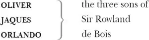

DUKE SENIOR , in exile
ROSALIND , his daughter
Duke FREDERICK , his usurping brother
CELIA , Frederick's daughter
TOUCHSTONE , the court jester
AMIENS , a lord attending on Duke Senior
LE BEAU , a courtier attending on Frederick
CHARLES , wrestler to Frederick

ADAM , an old servant of Sir Rowland, now in service to Oliver
DENNIS , servant to Oliver
JAQUES , a melancholy traveller
CORIN , an old shepherd
SILVIUS , a young shepherd, in love with Phoebe
PHOEBE , a shepherdess
WILLIAM , a countryman, in love with Audrey
AUDREY , a goatherd
SIR OLIVER MARTEXT , a country clergyman
HYMEN , god of marriage, perhaps played by Amiens or another courtier
Lords, Pages, Attendants
Act 1
Scene 1 ／ running scene 1
Enter Orlando and Adam 1
ORLANDO As I remember, Adam 2 , it was upon this fashion bequeathed me by will but poor 3 a thousand crowns 4 , and, as thou sayest, charged 5 my brother on his blessing to breed 6 me well: and there begins my sadness. My brother Jaques he keeps at school 7 , and report speaks goldenly of his profit. For my part, he keeps me rustically at home, or, to speak more properly, stays 8 me here at home unkept 9 , for call you that keeping for a gentleman of my birth, that differs not from the stalling 10 of an ox? His horses are bred better, for, besides that they are fair 11 with their feeding, they are taught their manage 12 , and to that end riders 13 dearly 14 hired: but I, his brother, gain nothing under him but growth, for the which his animals on his dunghills are as much bound 15 to him as I. Besides this nothing that he so plentifully gives me, the something that nature gave me his countenance 16 seems to take from me: he lets me feed with his hinds 17 , bars me the place of a brother, and, as much as in him lies 18 , mines my gentility 19 with my education. This is it, Adam, that grieves 20 me. And the spirit of my father, which I think is within me, begins to mutiny against this servitude. I will no longer endure it, though yet I know no wise remedy how to avoid 21 it.
Enter Oliver
ADAM Yonder comes my master, your brother.
ORLANDO Go apart 22 , Adam, and thou shalt hear how he will shake me up 23 .
Adam stands aside
OLIVER Now, sir, what make 24 you here?
ORLANDO Nothing: I am not taught to make anything.
OLIVER What mar 25 you then, sir?
ORLANDO Marry 26 , sir, I am helping you to mar that which God made, a poor unworthy brother of yours, with idleness.
OLIVER Marry, sir, be better employed, and be naught awhile 27 .
ORLANDO Shall I keep your hogs and eat husks with them? What prodigal portion 28 have I spent that I should come to such penury?
OLIVER Know you where you are, sir?
ORLANDO O, sir, very well: here in your orchard 29 .
OLIVER Know you before whom, sir?
ORLANDO Ay, better than him I am before knows 30 me. I know you are my eldest brother, and, in the gentle condition of blood 31 , you should so know me. The courtesy of nations 32 allows you my better, in that you are the first-born, but the same tradition 33 takes not away my blood 34 , were there twenty brothers betwixt us: I have as much of my father in me as you, albeit I confess your coming before me is nearer to his reverence 35 .
OLIVER What, boy!
Raises his hand or hits him
ORLANDO Come, come, elder brother, you are too young 36 in this.
Grabs him
OLIVER Wilt thou lay hands on me, villain 37 ?
ORLANDO I am no villain: I am the youngest son of Sir Rowland de Bois 38 , he was my father, and he is thrice a villain that says such a father begot 39 villains. Wert thou not my brother, I would not take this hand from thy throat till this other had pulled out thy tongue for saying so. Thou hast railed on 40 thyself.
ADAM Sweet masters, be patient: for your father's remembrance 41 , be at accord.
OLIVER Let me go, I say.
ORLANDO I will not, till I please: you shall hear me. My father charged you in his will to give me good education: you have trained me like a peasant, obscuring and hiding from me all gentleman-like qualities 42 . The spirit of my father grows strong in me, and I will no longer endure it: therefore allow me such exercises 43 as may become 44 a gentleman, or give me the poor allottery 45 my father left me by testament 46 , with that I will 47 go buy my fortunes.
Lets him go
OLIVER And what wilt thou do? Beg when that is spent? Well, sir, get you in. I will not long be troubled with you. You shall have some part of your will. I pray you leave me.
ORLANDO I will no further offend 48 you than becomes me for my good.
OLIVER Get you with him, you old dog.
To Adam
ADAM Is 'old dog' my reward? Most true, I have lost my teeth in your service. God be with my old master, he would not have spoke such a word.
Exeunt Orlando [and ] Adam
OLIVER Is it even so? Begin you to grow upon 49 me? I will physic 50 your rankness 51 , and yet give no thousand crowns neither 52 . Holla 53 , Dennis!
Enter Dennis
DENNIS Calls your worship?
OLIVER Was not Charles, the duke's wrestler, here to speak with me?
DENNIS So 54 please you, he is here at the door and importunes 55 access to you.
OLIVER Call him in.
[Exit Dennis ]
'Twill be a good way, and tomorrow 56 the wrestling is.
Enter Charles
CHARLES Good morrow to your worship.
OLIVER Good Monsieur Charles, what's the new news at the new court?
CHARLES There's no news at the court, sir, but the old news: that is, the old duke is banished by his younger brother the new duke, and three or four loving 57 lords have put themselves into voluntary exile with him, whose lands and revenues enrich the new duke, therefore he gives them good leave 58 to wander.
OLIVER Can you tell if Rosalind, the duke's daughter, be banished with her father?
CHARLES O, no; for the duke's daughter, her cousin, so loves her, being ever 59 from their cradles bred together, that she would have followed her exile, or have died to stay 60 behind her; she is at the court, and no less beloved 61 of her uncle than his own daughter, and never two ladies loved as they do.
OLIVER Where will the old duke live?
CHARLES They say he is already in the Forest of Arden 62 , and a many merry men with him; and there they live like the old Robin Hood 63 of England: they say many young gentlemen flock to him every day, and fleet 64 the time carelessly 65 as they did in the golden world 66 .
OLIVER What, you wrestle tomorrow before the new duke?
CHARLES Marry do I, sir, and I came to acquaint you with a matter. I am given, sir, secretly to understand that your younger brother Orlando hath a disposition to come in disguised against me to try a fall 67 . Tomorrow, sir, I wrestle for my credit 68 , and he that escapes me without some broken limb shall acquit him well. Your brother is but young and tender 69 , and for your love I would be loath to foil 70 him, as I must for my own honour if he come in: therefore, out of my love to you, I came hither to acquaint you withal 71 , that either you might stay him from his intendment 72 , or brook 73 such disgrace well as he shall run into, in that it is a thing of his own search 74 and altogether against my will.
OLIVER Charles, I thank thee for thy love to me, which thou shalt find I will most kindly requite 75 . I had myself notice of my brother's purpose herein and have by underhand 76 means laboured to dissuade him from it; but he is resolute. I'll tell thee, Charles, it is the stubbornest young fellow of France, full of ambition, an envious emulator 77 of every man's good parts 78 , a secret and villainous contriver against me his natural brother: therefore use thy discretion. I had as lief 79 thou didst break his neck as his finger. And thou wert best look to't 80 ; for if thou dost him any slight disgrace, or if he do not mightily grace himself on thee 81 , he will practise 82 against thee by poison, entrap thee by some treacherous device 83 and never leave thee till he hath ta'en thy life by some indirect means or other, for I assure thee, and almost with tears I speak it, there is not one so young and so villainous this day living. I speak but brotherly of him, but should I anatomize 84 him to thee as he is, I must blush and weep and thou must look pale and wonder.
CHARLES I am heartily glad I came hither to you. If he come tomorrow, I'll give him his payment 85 . If ever he go alone 86 again, I'll never wrestle for prize more. And so God keep your worship!
Exit
OLIVER Farewell, good Charles. Now will I stir this gamester 87 : I hope I shall see an end of him; for my soul, yet I know not why, hates nothing more than he. Yet he's gentle 88 , never schooled and yet learnèd, full of noble device 89 , of all sorts 90 enchantingly beloved, and indeed so much in the heart of the world, and especially of my own people, who best know him, that I am altogether misprised 91 . But it shall not be so long: this wrestler shall clear 92 all. Nothing remains but that I kindle the boy thither 93 , which now I'll go about.
Exit
Scene 2 ／ running scene 2 94
Enter Rosalind and Celia
CELIA I pray thee Rosalind, sweet my coz 95 , be merry.
ROSALIND Dear Celia, I show more mirth than I am mistress of, and would 96 you yet I were merrier? Unless you could teach me to forget a banished father, you must not learn 97 me how to remember any extraordinary pleasure.
CELIA Herein I see thou lovest me not with the full weight that I love thee. If my uncle, thy banished father, had banished thy uncle, the duke my father, so 98 thou hadst been still with me, I could have taught my love to take thy father for mine; so wouldst thou, if the truth of thy love to me were so righteously tempered 99 as mine is to thee.
ROSALIND Well, I will forget the condition of my estate 100 , to rejoice in yours.
CELIA You know my father hath no child but I, nor none is like 101 to have; and truly, when he dies, thou shalt be his heir; for what he hath taken away from thy father perforce 102 , I will render thee again in affection. By mine honour, I will, and when I break that oath, let me turn monster: therefore, my sweet Rose, my dear Rose, be merry.
ROSALIND From henceforth I will, coz, and devise sports 103 . Let me see, what think you of falling in love?
CELIA Marry, I prithee do, to make sport 104 withal 105 : but love no man in good earnest, nor no further in sport neither than with safety of a pure blush thou mayst in honour come off again 106 .
ROSALIND What shall be our sport, then?
CELIA Let us sit and mock the good housewife 107 Fortune from her wheel, that her gifts may henceforth be bestowed equally.
ROSALIND I would we could do so, for her benefits are mightily misplaced, and the bountiful blind woman 108 doth most mistake in her gifts to women.
CELIA 'Tis true, for those that she makes fair 109 she scarce makes honest 110 , and those that she makes honest she makes very ill-favouredly 111 .
ROSALIND Nay, now thou goest from Fortune's office 112 to Nature's: Fortune reigns in gifts of the world, not in the lineaments 113 of Nature.
Enter Clown [Touchstone 114 ]
CELIA No? When Nature hath made a fair creature, may she not by Fortune fall into the fire 115 ? Though Nature hath given us wit 116 to flout at 117 Fortune, hath not Fortune sent in this fool 118 to cut off the argument?
ROSALIND Indeed, there is Fortune too hard for Nature, when Fortune makes Nature's natural 119 the cutter-off of Nature's wit.
CELIA Peradventure 120 this is not Fortune's work neither, but Nature's, who perceiveth our natural wits too dull to reason of such goddesses, hath sent this natural for our whetstone 121 , for always the dullness of the fool is the whetstone of the wits.— How now, wit? Whither wander you 122 ?
TOUCHSTONE Mistress, you must come away to your father.
CELIA Were you made the messenger 123 ?
TOUCHSTONE No, by mine honour, but I was bid to come for you.
ROSALIND Where learned you that oath, fool?
TOUCHSTONE Of a certain knight that swore by his honour they were good pancakes 124 , and swore by his honour the mustard was naught 125 : now I'll stand to 126 it, the pancakes were naught, and the mustard was good, and yet was not the knight forsworn 127 .
CELIA How prove you that in the great heap of your knowledge?
ROSALIND Ay, marry, now unmuzzle your wisdom.
TOUCHSTONE Stand you both forth now: stroke your chins, and swear by your beards that I am a knave.
CELIA By our beards, if we had them, thou art.
TOUCHSTONE By my knavery, if I had it, then I were, but if you swear by that that is not, you are not forsworn. No more was this knight swearing by his honour, for he never had any; or if he had, he had sworn it away before ever he saw those pancakes or that mustard.
CELIA Prithee, who is't that thou meanest?
TOUCHSTONE One that old Frederick, your father, loves.
CELIA My father's love is enough to honour him enough; speak no more of him, you'll be whipped for taxation 128 one of these days.
TOUCHSTONE The more pity that fools may not speak wisely what wise men do foolishly.
CELIA By my troth 129 , thou sayest true, for since the little wit that fools have was silenced, the little foolery that wise men have makes a great show. Here comes Monsieur the Beau.
Enter Le Beau 130
ROSALIND With his mouth full of news.
CELIA Which he will put 131 on us, as pigeons feed their young.
ROSALIND Then shall we be news-crammed.
CELIA All the better: we shall be the more marketable 132 .—
Bonjour , Monsieur Le Beau, what's the news?
LE BEAU Fair princess, you have lost 133 much good sport.
CELIA Sport? Of what colour 134 ?
LE BEAU What colour, madam? How shall I answer you?
ROSALIND As wit and fortune will.
TOUCHSTONE Or as the destinies decrees.
Imitates Le Beau
CELIA Well said, that was laid on with a trowel 135 .
TOUCHSTONE Nay, if I keep not my rank 136 —
ROSALIND Thou losest 137 thy old 138 smell.
LE BEAU You amaze 139 me, ladies. I would have told you of good wrestling, which you have lost the sight of.
ROSALIND Yet tell us the manner of the wrestling.
LE BEAU I will tell you the beginning, and if it please your ladyships, you may see the end, for the best is yet to do 140 : and here, where you are, they are coming to perform it.
CELIA Well, the beginning that is dead and buried.
LE BEAU There comes an old man and his three sons—
CELIA I could match this beginning with an old tale 141 .
LE BEAU Three proper 142 young men, of excellent growth and presence.
ROSALIND With bills 143 on their necks, 'Be it known unto all men by these presents 144 .'
LE BEAU The eldest of the three wrestled with Charles, the duke's wrestler, which Charles in a moment threw him and broke three of his ribs, that 145 there is little hope of life in him. So 146 he served the second, and so the third. Yonder they lie, the poor old man, their father, making such pitiful dole 147 over them that all the beholders take his part with weeping.
ROSALIND Alas!
TOUCHSTONE But what is the sport, monsieur, that the ladies have lost?
LE BEAU Why, this that I speak of.
TOUCHSTONE Thus men may grow wiser every day. It is the first time that ever I heard breaking of ribs was sport for ladies.
CELIA Or I, I promise thee.
ROSALIND But is there any 148 else longs to see this broken 149 music in his sides? Is there yet another dotes upon rib-breaking? Shall we see this wrestling, cousin?
LE BEAU You must if you stay here, for here is the place appointed for the wrestling, and they are ready to perform it.
CELIA Yonder, sure they are coming. Let us now stay and see it.
Flourish 150 . Enter Duke [Frederick ] , Lords, Orlando, Charles and Attendants
DUKE FREDERICK Come on. Since the youth will not be entreated, his own peril on his forwardness 151 .
ROSALIND Is yonder the man?
To Le Beau
LE BEAU Even he, madam.
CELIA Alas, he is too young, yet he looks successfully 152 .
DUKE FREDERICK How now, daughter and cousin 153 !
Are you crept hither to see the wrestling?
ROSALIND Ay, my liege, so please you give us leave 154 .
DUKE FREDERICK You will take little delight in it, I can tell you, there is such odds 155 in the man 156 . In pity of the challenger's youth, I would fain 157 dissuade him, but he will not be entreated. Speak to him, ladies, see if you can move him.
CELIA Call him hither, good Monsieur Le Beau.
DUKE FREDERICK Do so. I'll not be by.
He stands aside
LE BEAU Monsieur the challenger, the princess calls for you.
To Orlando
ORLANDO I attend them with all respect and duty.
ROSALIND Young man, have you challenged Charles the wrestler?
ORLANDO No, fair princess, he is the general challenger: I come but in 158 , as others do, to try 159 with him the strength of my youth.
CELIA Young gentleman, your spirits are too bold for your years. You have seen cruel proof of this man's strength: if you saw yourself with your eyes or knew yourself with your judgement, the fear of your adventure 160 would counsel you to a more equal 161 enterprise. We pray you for your own sake to embrace your own safety and give over this attempt.
ROSALIND Do, young sir: your reputation shall not therefore be misprized 162 . We will make it our suit 163 to the duke that the wrestling might not go forward.
ORLANDO I beseech you, punish me not with your hard thoughts, wherein I confess me much guilty, to deny so fair and excellent ladies anything. But let your fair eyes and gentle wishes go with me to my trial; wherein if I be foiled 164 , there is but one shamed that was never gracious 165 , if killed, but one dead that is willing to be so. I shall do my friends 166 no wrong, for I have none to lament me, the world no injury, for in it I have nothing. Only in the world I fill up a place, which may be better supplied when I have made it empty.
ROSALIND The little strength that I have, I would it were with you.
CELIA And mine, to eke out 167 hers.
ROSALIND Fare you well: pray heaven I be deceived 168 in you!
CELIA Your heart's desires be with you!
CHARLES Come, where is this young gallant that is so desirous to lie with his mother earth 169 ?
ORLANDO Ready, sir, but his will 170 hath in it a more modest working 171 .
DUKE FREDERICK You shall try but one fall 172 .
CHARLES No, I warrant 173 your grace you shall not entreat him to a second, that have so mightily persuaded him from a first.
ORLANDO You mean to mock me after, you should not have mocked me before. But come your ways 174 .
ROSALIND Now Hercules 175 be thy speed 176 , young man!
CELIA I would I were invisible, to catch the strong fellow by the leg.
Wrestle
ROSALIND O excellent young man!
CELIA If I had a thunderbolt in mine eye, I can tell who should down 177 .
Shout Charles is thrown
DUKE FREDERICK No more, no more.
ORLANDO Yes, I beseech your grace:
I am not yet well breathed 178 .
DUKE FREDERICK How dost thou, Charles?
LE BEAU He cannot speak, my lord.
DUKE FREDERICK Bear him away.— What is thy name, young man?
Charles is carried out/To Orlando
ORLANDO Orlando, my liege, the youngest son of Sir Rowland de Bois.
DUKE FREDERICK I would thou hadst been son to some man else:
The world esteemed thy father honourable,
But I did find him still 179 mine enemy.
Thou shouldst have better pleased me with this deed
Hadst thou descended from another house.
But fare thee well, thou art a gallant youth.
I would thou hadst told me of another father.
Exit Duke [with others; Celia, Orlando and Rosalind remain ]
CELIA Were I my father, coz, would I do this?
To Rosalind
ORLANDO I am more proud to be Sir Rowland's son,
Aside?
His youngest son, and would not change that calling 180
To be adopted heir to Frederick.
ROSALIND My father loved Sir Rowland as his soul,
To Celia
And all the world was of my father's mind:
Had I before known this young man his son,
I should have given him tears unto 181 entreaties,
Ere 182 he should thus have ventured.
CELIA Gentle cousin,
To Rosalind
Let us go thank him and encourage him.
My father's rough and envious 183 disposition
Sticks 184 me at heart.— Sir, you have well deserved,
To Orlando
If you do keep your promises in love
But justly 185 , as you have exceeded all promise 186 ,
Your mistress 187 shall be happy.
ROSALIND Gentleman,
Gives him a chain from her neck
Wear this for me, one out of suits 188 with fortune,
That could give more, but that her hand lacks means.
Shall we go, coz?
To Celia
CELIA Ay.— Fare you well, fair gentleman.
ORLANDO Can I not say, I thank you? My better parts 189
Are all thrown down, and that which here stands up
Is but a quintain 190 , a mere lifeless block.
ROSALIND He calls us back. My pride fell with my fortunes.
I'll ask him what he would 191 .— Did you call, sir?
To Orlando
Sir, you have wrestled well and overthrown
More than your enemies.
CELIA Will you go, coz?
ROSALIND Have with you 192 . Fare you well.
Exeunt [Rosalind and Celia ]
ORLANDO What passion hangs these weights upon my tongue? I cannot speak to her, yet she urged conference 193 .
Enter Le Beau
O poor Or 194 lando, thou art overthrown!
Or Charles or something weaker masters thee.
LE BEAU Good sir, I do in friendship counsel you
To leave this place. Albeit you have deserved
High commendation, true applause and love,
Yet such is now the duke's condition 195
That he misconstrues all that you have done.
The duke is humorous 196 : what he is indeed 197
More suits you to conceive 198 than I to speak of.
ORLANDO I thank you, sir; and pray you tell me this:
Which of the two was daughter of the duke
That here was at the wrestling?
LE BEAU Neither his daughter, if we judge by manners,
But yet indeed the taller 199 is his daughter,
The other is daughter to the banished duke,
And here detained by her usurping uncle
To keep his daughter company, whose loves
Are dearer than the natural bond of sisters.
But I can tell you that of late this duke
Hath ta'en displeasure 'gainst his gentle 200 niece,
Grounded upon no other argument 201
But that the people praise her for her virtues
And pity her for her good father's sake;
And, on my life, his malice 'gainst the lady
Will suddenly 202 break forth. Sir, fare you well.
Hereafter, in a better world than this,
I shall desire more love and knowledge 203 of you.
ORLANDO I rest 204 much bounden 205 to you. Fare you well.
[Exit Le Beau ]
Thus must I from the smoke into the smother 206 ,
From tyrant duke unto a tyrant brother.
But heavenly Rosalind!
Exit
Scene 3 ／ running scene 2 continues
Enter Celia and Rosalind
CELIA Why, cousin? Why, Rosalind? Cupid 207 have mercy, not a word?
ROSALIND Not one to throw at a dog.
CELIA No, thy words are too precious to be cast away upon curs 208 , throw some of them at me; come, lame me with reasons 209 .
ROSALIND Then there were 210 two cousins laid up, when the one should be lamed with reasons and the other mad without any.
CELIA But is all this for your father?
ROSALIND No, some of it is for my child's father 211 . O, how full of briars 212 is this working-day 213 world!
CELIA They are but burs 214 , cousin, thrown upon thee in holiday foolery: if we walk not in the trodden paths our very petticoats 215 will catch them.
ROSALIND I could shake them off my coat 216 : these burs are in my heart.
CELIA Hem 217 them away.
ROSALIND I would try, if I could cry 'hem' 218 and have 219 him.
CELIA Come, come, wrestle 220 with thy affections.
ROSALIND O, they take the part of 221 a better wrestler than myself!
CELIA O, a good wish upon you 222 ! You will try 223 in time, in despite of a fall 224 . But turning these jests out of service 225 , let us talk in good earnest: is it possible, on such a sudden, you should fall into so strong a liking with old Sir Rowland's youngest son?
ROSALIND The duke my father loved his father dearly 226 .
CELIA Doth it therefore ensue that you should love his son dearly? By this kind of chase 227 , I should hate him, for my father hated his father dearly; yet I hate not Orlando.
ROSALIND No, faith, hate him not, for my sake.
CELIA Why should I not? 228 Doth he not deserve well?
Enter Duke with Lords
ROSALIND Let me love him for that, and do you love him because I do. Look, here comes the duke.
CELIA With his eyes full of anger.
DUKE FREDERICK Mistress, dispatch you with your safest haste 229
To Rosalind
And get you from our court.
ROSALIND Me, uncle?
DUKE FREDERICK You, cousin
Within these ten days if that thou be'st found
So near our public court as twenty miles,
Thou diest for it.
ROSALIND I do beseech your grace,
Let me the knowledge of my fault bear with me:
If with myself I hold intelligence 230
Or have acquaintance with mine own desires,
If that I do not dream or be not frantic 231 —
As I do trust I am not — then, dear 232 uncle,
Never so much as in a thought unborn
Did I offend your highness.
DUKE FREDERICK Thus do all traitors.
If their purgation 233 did consist in words,
They are as innocent as grace 234 itself;
Let it suffice thee that I trust thee not.
ROSALIND Yet your mistrust cannot make me a traitor;
Tell me whereon 235 the likelihood depends.
DUKE FREDERICK Thou art thy father's daughter, there's enough.
ROSALIND So was I when your highness took his dukedom,
So was I when your highness banished him;
Treason is not inherited, my lord,
Or if we did derive it from our friends 236 ,
What's that to me? My father was no traitor.
Then, good my liege, mistake me not so much
To think my poverty is treacherous.
CELIA Dear sovereign, hear me speak.
DUKE FREDERICK Ay, Celia, we stayed 237 her for your sake,
Else 238 had she with her father ranged 239 along.
CELIA I did not then entreat to have her stay,
It was your pleasure 240 and your own remorse 241 .
I was too young 242 that time to value her,
But now I know her: if she be a traitor,
Why so am I. We still 243 have slept together,
Rose at an instant 244 , learned, played, eat 245 together,
And wheresoe'er we went, like Juno's swans 246 ,
Still we went coupled and inseparable.
DUKE FREDERICK She is too subtle 247 for thee, and her smoothness 248 ,
Her very silence and her patience
Speak to the people, and they pity her.
Thou art a fool: she robs thee of thy name 249 ,
And thou wilt show more bright and seem more virtuous
When she is gone. Then open not thy lips.
Firm and irrevocable is my doom 250
Which I have passed upon her: she is banished.
CELIA Pronounce that sentence then on me, my liege:
I cannot live out of her company.
DUKE FREDERICK You are a fool. You, niece, provide 251 yourself:
If you outstay the time, upon mine honour,
And in the greatness 252 of my word, you die.
Exeunt Duke and others
CELIA O my poor Rosalind, whither wilt thou go?
Wilt thou change 253 fathers? I will give thee mine.
I charge thee be not thou more grieved than I am.
ROSALIND I have more cause.
CELIA Thou hast not, cousin.
Prithee be cheerful; know'st thou not the duke
Hath banished me, his daughter?
ROSALIND That he hath not.
CELIA No, hath not? Rosalind lacks then the love
Which teacheth thee that thou and I am one.
Shall we be sundered 254 ? Shall we part, sweet girl?
No, let my father seek another heir:
Therefore devise with me how we may fly,
Whither to go and what to bear with us.
And do not seek to take your change 255 upon you,
To bear your griefs yourself and leave me out,
For, by this heaven, now at our sorrows pale 256 ,
Say what thou canst, I'll go along with thee.
ROSALIND Why, whither shall we go?
CELIA To seek my uncle in the Forest of Arden.
ROSALIND Alas, what danger will it be to us,
Maids as we are, to travel forth so far!
Beauty provoketh thieves sooner than gold.
CELIA I'll put myself in poor and mean 257 attire
And with a kind of umber 258 smirch my face.
The like do you. So shall we pass along
And never stir assailants.
ROSALIND Were it not better,
Because that I am more than common tall,
That I did suit me all points 259 like a man?
A gallant curtle-axe 260 upon my thigh,
A boar-spear 261 in my hand, and — in my heart
Lie there what hidden woman's fear there will —
We'll have a swashing 262 and a martial outside,
As many other mannish cowards have
That do outface it with their semblances 263 .
CELIA What shall I call thee when thou art a man?
ROSALIND I'll have no worse a name than Jove 264 's own page,
And therefore look you call me Ganymede 265 .
But what will you be called?
CELIA Something that hath a reference to my state 266 :
No longer Celia, but Aliena 267 .
ROSALIND But, cousin, what if we assayed 268 to steal
The clownish fool out of your father's court?
Would he not be a comfort to our travel 269 ?
CELIA He'll go along o'er the wide world with me.
Leave me alone 270 to woo 271 him. Let's away,
And get our jewels and our wealth together,
Devise the fittest time and safest way
To hide us from pursuit that will be made
After my flight. Now go in we content 272
To liberty and not to banishment.
Exeunt
Act 2
Scene 1 ／ running scene 3 273
Enter Duke Senior, Amiens 274 and two or three Lords, like foresters 275
DUKE SENIOR Now, my co-mates and brothers in exile,
Hath not old custom 276 made this life more sweet
Than that of painted pomp 277 ? Are not these woods
More free from peril than the envious 278 court?
Here feel we not the penalty of Adam 279 ,
The seasons' difference 280 , as 281 the icy fang
And churlish chiding 282 of the winter's wind,
Which, when it bites and blows upon my body,
Even till I shrink with cold, I smile and say
'This is no flattery: these are counsellors
That feelingly 283 persuade me what I am.'
Sweet are the uses 284 of adversity,
Which, like the toad, ugly and venomous,
Wears yet a precious jewel in his head 285 .
And this our life exempt from public haunt 286
Finds tongues 287 in trees, books in the running brooks,
Sermons in stones and good in everything.
AMIENS I would not change 288 it. Happy is your grace
That can translate 289 the stubbornness of fortune
Into so quiet and so sweet a style 290 .
DUKE SENIOR Come, shall we go and kill us venison?
And yet it irks me the poor dappled fools 291 ,
Being native burghers 292 of this desert 293 city,
Should in their own confines 294 with forkèd heads 295
Have their round haunches gored.
FIRST LORD Indeed, my lord,
The melancholy Jaques grieves at that,
And in that kind 296 swears you do more usurp
Than doth your brother that hath banished you.
Today my Lord of Amiens and myself
Did steal behind him as he lay along 297
Under an oak whose antique 298 root peeps out
Upon the brook that brawls 299 along this wood,
To the which place a poor sequestered 300 stag
That from the hunter's aim had ta'en a hurt,
Did come to languish; and indeed, my lord,
The wretched animal heaved forth such groans
That their discharge did stretch his leathern coat
Almost to bursting, and the big round tears
Coursed 301 one another down his innocent nose
In piteous chase: and thus the hairy fool
Much markèd of 302 the melancholy Jaques,
Stood on th'extremest verge 303 of the swift brook,
Augmenting it with tears.
DUKE SENIOR But what said Jaques?
Did he not moralize 304 this spectacle?
FIRST LORD O, yes, into a thousand similes.
First, for his weeping into the needless 305 stream;
'Poor deer,' quoth he, 'thou mak'st a testament 306
As worldlings 307 do, giving thy sum of more 308
To that which had too much.' Then, being there alone,
Left and abandoned of his velvet friend 309 ,
''Tis right,' quoth he, 'thus misery doth part 310
The flux 311 of company.' Anon 312 a careless 313 herd,
Full of the pasture, jumps along by him
And never stays 314 to greet him. 'Ay,' quoth Jaques,
'Sweep on, you fat and greasy 315 citizens,
'Tis just the fashion; wherefore 316 do you look
Upon that poor and broken bankrupt there?'
Thus most invectively 317 he pierceth through
The body of country, city, court,
Yea, and of this our life, swearing that we
Are mere 318 usurpers, tyrants, and what's worse,
To fright the animals and to kill them up 319
In their assigned and native dwelling-place.
DUKE SENIOR And did you leave him in this contemplation?
SECOND LORD We did, my lord, weeping and commenting 320
Upon the sobbing deer.
DUKE SENIOR Show me the place.
I love to cope 321 him in these sullen fits,
For then he's full of matter 322 .
FIRST LORD I'll bring you to him straight 323 .
Exeunt
Scene 2 ／ running scene 4 324
Enter Duke [Frederick ] , with Lords
DUKE FREDERICK Can it be possible that no man saw them?
It cannot be: some villains 325 of my court
Are of consent and sufferance 326 in this.
FIRST LORD I cannot hear of any that did see her.
The ladies, her attendants of her chamber,
Saw her abed, and in the morning early
They found the bed untreasured 327 of their mistress.
SECOND LORD My lord, the roynish 328 clown, at whom so oft
Your grace was wont 329 to laugh, is also missing.
Hisperia, the princess' gentlewoman,
Confesses that she secretly o'erheard
Your daughter and her cousin much commend
The parts 330 and graces of the wrestler
That did but lately foil the sinewy Charles,
And she believes, wherever they are gone,
That youth is surely in their company.
DUKE FREDERICK Send to his brother, fetch that gallant 331 hither.
If he be absent, bring his brother to me.
I'll make him find him. Do this suddenly 332 ,
And let not search and inquisition quail 333
To bring again 334 these foolish runaways.
Exeunt
Scene 3 ／ running scene 5 335
Enter Orlando and Adam [, meeting ]
ORLANDO Who's there?
ADAM What, my young master? O, my gentle master!
O my sweet master! O you memory 336
Of old Sir Rowland! Why, what make you 337 here?
Why are you virtuous? Why do people love you?
And wherefore are you gentle, strong and valiant?
Why would you be so fond 338 to overcome
The bonny priser 339 of the humorous 340 duke?
Your praise is come too swiftly home before you.
Know you not, master, to some kind of men
Their graces serve them but as enemies?
No more 341 do yours: your virtues, gentle master,
Are sanctified 342 and holy traitors to you.
O, what a world is this, when what is comely 343
Envenoms 344 him that bears it!
ORLANDO Why, what's the matter?
ADAM O, unhappy youth,
Come not within these doors! Within this roof
The enemy of all your graces lives:
Your brother — no, no brother, yet the son —
Yet not the son, I will not call him son —
Of him I was about to call his father —
Hath heard your praises 345 , and this night he means
To burn the lodging where you use 346 to lie
And you within it. If he fail of 347 that,
He will have other means to cut you off 348 ;
I overheard him and his practices 349 .
This is no place 350 , this house is but a butchery 351 ;
Abhor it, fear it, do not enter it.
ORLANDO Why, whither, Adam, wouldst thou have me go?
ADAM No matter whither, so 352 you come not here.
ORLANDO What, wouldst thou have me go and beg my food?
Or with a base and boist'rous 353 sword enforce 354
A thievish living on the common 355 road?
This I must do, or know not what to do:
Yet this I will not do, do how I can.
I rather will subject me to the malice
Of a diverted blood 356 and bloody brother.
ADAM But do not so. I have five hundred crowns,
The thrifty hire 357 I saved under your father,
Which I did store to be my foster-nurse 358
When service should in my old limbs lie lame 359
And unregarded 360 age in corners thrown.
Take that, and he that doth the ravens feed,
Yea, providently caters for the sparrow,
Be comfort to my age. Here is the gold,
Gives gold
All this I give you. Let me be your servant.
Though I look old, yet I am strong and lusty 361 ;
For in my youth I never did apply
Hot and rebellious liquors in my blood,
Nor did not with unbashful forehead 362 woo
The means of weakness and debility:
Therefore my age is as a lusty winter,
Frosty 363 , but kindly 364 . Let me go with you.
I'll do the service of a younger man
In all your business and necessities.
ORLANDO O good old man, how well in thee appears
The constant 365 service of the antique world,
When service sweat 366 for duty, not for meed 367 !
Thou art not for the fashion of these times,
Where none will sweat but for promotion,
And having that, do choke their service up
Even with the having 368 : it is not so with thee.
But, poor old man, thou prun'st a rotten tree,
That cannot so much as a blossom yield
In lieu of 369 all thy pains and husbandry 370 .
But come thy ways 371 , we'll go along together,
And ere we have thy youthful wages spent,
We'll light upon some settled low content 372 .
ADAM Master, go on, and I will follow thee
To the last gasp with truth and loyalty.
From seventeen years till now almost fourscore 373
Here livèd I, but now live here no more.
At seventeen years many their fortunes seek,
But at fourscore it is too late a week 374 .
Yet fortune cannot recompense me better
Than to die well and not my master's debtor.
Exeunt
Scene 4 ／ running scene 6 375
Enter Rosalind for 376 Ganymede, Celia for Aliena, and Clown alias 377 Touchstone
ROSALIND O Jupiter 378 , how merry are my spirits!
TOUCHSTONE I care not for my spirits, if my legs were not weary.
ROSALIND I could find in my heart to disgrace my man's apparel and to cry like a woman, but I must comfort the weaker vessel 379 , as doublet and hose 380 ought to show itself courageous to petticoat: therefore courage, good Aliena!
Aside?
CELIA I pray you bear with me. I cannot go no further.
TOUCHSTONE For my part, I had rather bear with you than bear you: yet I should bear no cross 381 if I did bear you, for I think you have no money in your purse.
ROSALIND Well, this is the Forest of Arden.
TOUCHSTONE Ay, now am I in Arden, the more fool I. When I was at home, I was in a better place, but travellers must be content.
Enter Corin and Silvius 382
ROSALIND Ay, be so, good Touchstone. Look you, who comes here: a young man and an old in solemn 383 talk.
They stand aside
CORIN That is the way to make her scorn you still.
SILVIUS O Corin, that thou knew'st how I do love her!
CORIN I partly guess, for I have loved ere now.
SILVIUS No, Corin, being old, thou canst not guess,
Though in thy youth thou wast as true a lover
As ever sighed upon a midnight pillow:
But if thy love were ever like to mine —
As sure I think did never man love so —
How many actions most ridiculous
Hast thou been drawn to by thy fantasy 384 ?
CORIN Into a thousand that I have forgotten.
SILVIUS O, thou didst then never love so heartily 385 !
If thou rememb'rest not the slightest folly 386
That ever love did make thee run into,
Thou hast not loved.
Or if thou hast not sat as I do now,
Wearing 387 thy hearer in thy mistress' praise,
Thou hast not loved.
Or if thou hast not broke from 388 company
Abruptly, as my passion now makes me,
Thou hast not loved.
O Phoebe 389 , Phoebe, Phoebe!
Exit
ROSALIND Alas, poor shepherd! Searching of 390 thy wound 391 ,
I have by hard adventure 392 found mine own.
TOUCHSTONE And I mine. I remember when I was in love, I broke my sword 393 upon a stone and bid him 394 take that for coming 395 a-night 396 to Jane Smile. And I remember the kissing of her batler 397 and the cow's dugs 398 that her pretty chopt 399 hands had milked 400 ; and I remember the wooing of a peascod 401 instead of her, from whom I took two cods 402 and, giving her them again, said with weeping tears, 'Wear 403 these for my sake.' We that are true lovers run into strange capers 404 ; but as all is mortal 405 in nature, so is all nature in love mortal in folly.
ROSALIND Thou speakest wiser than thou art ware 406 of.
TOUCHSTONE Nay, I shall ne'er be ware of mine own wit 407 till I break my shins against it.
ROSALIND Jove, Jove! This shepherd's passion
Is much upon my fashion 408 .
TOUCHSTONE And mine, but it grows something 409 stale 410 with me.
CELIA I pray you one of you question yond 411 man
If he for gold will give us any food.
I faint almost to death.
TOUCHSTONE Holla, you clown 412 !
To Corin
ROSALIND Peace, fool, he's not thy kinsman.
CORIN Who calls?
TOUCHSTONE Your betters, sir.
CORIN Else are they very wretched.
ROSALIND Peace, I say. Good even 413 to you, friend.
CORIN And to you, gentle sir, and to you all.
ROSALIND I prithee, shepherd, if that love or gold
Can in this desert 414 place buy entertainment 415 ,
Bring us where we may rest ourselves and feed:
Here's a young maid with travel much oppressed
And faints for succour 416 .
CORIN Fair sir, I pity her
And wish, for her sake more than for mine own,
My fortunes were more able to relieve her.
But I am shepherd to another man
And do not shear the fleeces that I graze 417 :
My master is of churlish disposition
And little recks 418 to find the way to heaven
By doing deeds of hospitality.
Besides, his cote 419 , his flocks and bounds of feed 420
Are now on sale, and at our sheepcote 421 now,
By reason of his absence, there is nothing
That you will feed on. But what is, come see,
And in my voice 422 most welcome shall you be.
ROSALIND What is he that shall buy his flock and pasture?
CORIN That young swain 423 that you saw here but erewhile 424 ,
That little cares for buying anything.
ROSALIND I pray thee if it stand 425 with honesty,
Buy thou the cottage, pasture and the flock,
And thou shalt have to pay 426 for it of us.
CELIA And we will mend 427 thy wages. I like this place
And willingly could waste 428 my time in it.
CORIN Assuredly the thing is to be sold.
Go with me: if you like upon report
The soil, the profit and this kind of life,
I will your very faithful feeder 429 be
And buy it with your gold right suddenly 430 .
Exeunt
Scene 5 ／ running scene 7
Enter Amiens, Jaques and others
AMIENS Song
Under the greenwood 431 tree
Who 432 loves to lie with me,
And turn 433 his merry note 434
Unto the sweet bird's throat 435 ,
Come hither, come hither, come hither:
Here shall he see no enemy
But winter and rough weather.
JAQUES More, more, I prithee more.
AMIENS It will make you melancholy, Monsieur Jaques.
JAQUES I thank it. More, I prithee more.
I can suck melancholy out of a song,
As a weasel sucks eggs. More, I prithee more.
AMIENS My voice is ragged 436 . I know I cannot please you.
JAQUES I do not desire you to please me,
I do desire you to sing.
Come, more: another stanzo 437 — call you 'em stanzos?
AMIENS What you will, Monsieur Jaques.
JAQUES Nay, I care not for their names. They owe me nothing 438 . Will you sing?
AMIENS More at your request than to please myself.
JAQUES Well then, if ever I thank any man, I'll thank you. But that 439 they call compliment 440 is like th'encounter 441 of two dog-apes 442 , and when a man thanks me heartily, methinks I have given him a penny and he renders me the beggarly 443 thanks. Come, sing; and you that will not, hold your tongues.
AMIENS Well, I'll end 444 the song. Sirs, cover the while 445 . The duke will drink under this tree. He hath been all this day to look 446 you.
A table with food and drink is set out
JAQUES And I have been all this day to avoid him.
He is too disputable 447 for my company:
I think of as many matters 448 as he, but I give
Heaven thanks and make no boast of them.
Come, warble, come.
Song. All together here
Who doth ambition shun
And loves to live i'th'sun 449 ,
Seeking the food he eats
And pleased with what he gets,
Come hither, come hither, come hither:
Here shall he see etc. 450
JAQUES I'll give you a verse to this note
That I made yesterday in despite of my invention 451 .
Hands Amiens a paper
AMIENS And I'll sing it. Thus it goes:
If it do come to pass
Sings
That any man turn ass,
Leaving his wealth and ease,
A stubborn will to please,
Ducdame 452 , ducdame, ducdame:
Here shall he see gross 453 fools as he,
Other lords gather round him
in a circle, examining the paper
An if 454 he will come to me.
What's that 'ducdame'?
JAQUES 'Tis a Greek 455 invocation, to call fools into a circle 456 . I'll go sleep, if I can. If I cannot, I'll rail 457 against all the first-born of Egypt 458 .
AMIENS And I'll go seek the duke. His banquet 459 is prepared.
Exeunt [separately ]
Scene 6 ／ running scene 7 continues
Enter Orlando and Adam
ADAM Dear master, I can go no further.
O, I die for food! Here lie I down,
Lies down
And measure out my grave. Farewell, kind master.
ORLANDO Why, how now, Adam? No greater heart in thee? Live a little, comfort 460 a little, cheer thyself a little. If this uncouth 461 forest yield anything savage, I will either be food for it or bring it for food to thee. Thy conceit 462 is nearer death than thy powers. For my sake be comfortable 463 , hold death awhile at the arm's end. I will here be with thee presently 464 , and if I bring thee not something to eat, I will give thee leave to die. But if thou diest before I come, thou art a mocker of my labour. Well said 465 ! Thou look'st cheerly 466 , and I'll be with thee quickly. Yet thou liest in the bleak air. Come, I will bear thee to some shelter, and thou shalt not die for lack of a dinner, if there live anything in this desert. Cheerly, good Adam!
Exeunt Picks up Adam
Scene 7 ／ running scene 7 continues
Enter Duke Senior and Lord [s ] , like outlaws
DUKE SENIOR I think he be transformed into a beast,
For I can nowhere find him like a man.
FIRST LORD My lord, he is but even now gone hence:
Here was he merry, hearing of a song.
DUKE SENIOR If he, compact of jars 467 , grow musical,
We shall have shortly discord in the spheres 468 .
Go, seek him: tell him I would speak with him.
Enter Jaques
FIRST LORD He saves my labour by his own approach.
DUKE SENIOR Why, how now, monsieur! What a life is this,
That your poor friends must woo your company?
What, you look merrily.
JAQUES A fool, a fool! I met a fool i'th'forest,
A motley 469 fool — a miserable world.
As I do live by food, I met a fool
Who laid him down and basked him in the sun,
And railed on Lady Fortune in good terms,
In good set terms 470 , and yet a motley fool.
'Good morrow, fool', quoth I. 'No, sir,' quoth he,
'Call me not fool till heaven hath sent me fortune 471 .'
And then he drew a dial 472 from his poke 473 ,
And looking on it with lack-lustre eye,
Says very wisely, 'It is ten o'clock,
Thus we may see', quoth he, 'how the world wags 474 .
'Tis but an hour 475 ago since it was nine,
And after one hour more 'twill be eleven 476 ,
And so, from hour to hour, we ripe 477 and ripe,
And then, from hour to hour, we rot 478 and rot,
And thereby hangs a tale 479 .' When I did hear
The motley fool thus moral 480 on the time,
My lungs began to crow like chanticleer 481 ,
That fools should be so deep contemplative 482 ,
And I did laugh sans 483 intermission
An hour by his dial. O noble fool!
A worthy fool! Motley's the only wear 484 .
DUKE SENIOR What fool is this?
JAQUES O worthy fool! One that hath been a courtier,
And says, if ladies be but young and fair,
They have the gift to know it. And in his brain,
Which is as dry 485 as the remainder 486 biscuit
After a voyage, he hath strange places 487 crammed
With observation, the which he vents 488
In mangled forms. O, that I were a fool!
I am ambitious for a motley coat.
DUKE SENIOR Thou shalt have one.
JAQUES It is my only suit 489 ,
Provided that you weed 490 your better judgements
Of all opinion that grows rank 491 in them
That I am wise. I must have liberty
Withal 492 , as large a charter 493 as the wind,
To blow on whom I please, for so fools have.
And they that are most gallèd 494 with my folly,
They most must laugh. And why, sir, must they so?
The 'why' is plain as way 495 to parish church 496 :
He that a fool doth very wisely hit 497
Doth very foolishly, although he smart 498 ,
Seem senseless of the bob 499 . If not,
The wise man's folly is anatomized 500
Even by the squandering glances 501 of the fool.
Invest 502 me in my motley, give me leave
To speak my mind, and I will through and through
Cleanse 503 the foul body of th'infected world,
If they will patiently receive my medicine.
DUKE SENIOR Fie on thee! I can tell what thou wouldst do.
JAQUES What, for a counter 504 , would I do but good?
DUKE SENIOR Most mischievous foul sin, in chiding sin.
For thou thyself hast been a libertine 505 ,
As sensual as the brutish sting 506 itself;
And all th'embossèd sores and headed evils 507
That thou with licence of free foot hast caught
Wouldst thou disgorge 508 into the general world.
JAQUES Why, who cries out on pride 509 ,
That can therein tax any private party 510 ?
Doth it not flow as hugely as the sea,
Till that the weary very means do ebb 511 ?
What woman in the city do I name,
When that I say the city woman bears
The cost of princes 512 on unworthy shoulders?
Who can come in 513 and say that I mean her,
When such a one as she, such is her neighbour?
Or what is he of basest function 514
That says his bravery 515 is not on my cost 516 ,
Thinking that I mean him, but therein suits 517
His folly to the mettle 518 of my speech?
There then, how then, what then? Let me see wherein
My tongue hath wronged him: if it do him right 519 ,
Then he hath wronged himself. If he be free 520 ,
Why then my taxing like a wild-goose flies,
Unclaimed of any man. But who comes here?
Enter Orlando
ORLANDO Forbear 521 , and eat no more.
Draws his sword
JAQUES Why, I have eat none yet.
ORLANDO Nor shalt not, till necessity be served.
JAQUES Of what kind should this cock come of? 522
DUKE SENIOR Art thou thus boldened, man, by thy distress,
Or else a rude 523 despiser of good manners,
That in civility thou seem'st so empty?
ORLANDO You touched my vein at first 524 . The thorny point
Of bare distress hath ta'en from me the show
Of smooth civility: yet am I inland bred 525
And know some nurture 526 . But forbear, I say:
He dies that touches any of this fruit
Till I and my affairs are answerèd 527 .
JAQUES An you will not be answered with reason 528 , I must die.
DUKE SENIOR What would you have? Your gentleness 529 shall force
More than your force move us to gentleness.
ORLANDO I almost die for food, and let me have it.
DUKE SENIOR Sit down and feed, and welcome to our table.
ORLANDO Speak you so gently? Pardon me, I pray you.
I thought that all things had been savage here,
And therefore put I on the countenance 530
Of stern commandment. But whate'er you are
That in this desert inaccessible,
Under the shade of melancholy 531 boughs,
Lose and neglect the creeping hours of time,
If ever you have looked on better days,
If ever been where bells have knolled 532 to church,
If ever sat at any good man's feast,
If ever from your eyelids wiped a tear
And know what 'tis to pity and be pitied,
Let gentleness my strong enforcement 533 be:
In the which hope I blush, and hide my sword.
Sheathes his sword
DUKE SENIOR True is it that we have seen better days,
And have with holy bell been knolled to church,
And sat at good men's feasts, and wiped our eyes
Of drops that sacred pity hath engendered:
And therefore sit you down in gentleness,
And take upon command 534 what help we have
That to your wanting 535 may be ministered.
ORLANDO Then but forbear your food a little while,
Whiles, like a doe, I go to find my fawn
And give it food. There is an old poor man,
Who after me hath many a weary step
Limped in pure love: till he be first sufficed,
Oppressed with two weak 536 evils, age and hunger,
I will not touch a bit.
DUKE SENIOR Go find him out.
And we will nothing waste 537 till you return.
ORLANDO I thank ye, and be blest for your good comfort!
[Exit ]
DUKE SENIOR Thou see'st we are not all alone unhappy 538 :
This wide and universal theatre
Presents more woeful pageants than the scene
Wherein we play in.
JAQUES All the world's a stage,
And all the men and women merely players;
They have their exits and their entrances,
And one man in his time plays many parts,
His acts 539 being seven ages. At first the infant,
Mewling 540 and puking in the nurse's arms.
Then the whining schoolboy, with his satchel
And shining morning face, creeping like snail
Unwillingly to school. And then the lover,
Sighing like furnace, with a woeful ballad
Made to his mistress' eyebrow. Then a soldier,
Full of strange 541 oaths and bearded like the pard 542 ,
Jealous in 543 honour, sudden and quick in quarrel,
Seeking the bubble reputation
Even in the cannon's mouth. And then the justice,
In fair round belly with good capon 544 lined,
With eyes severe and beard of formal cut,
Full of wise saws 545 and modern instances 546 .
And so he plays his part. The sixth age shifts
Into the lean and slippered pantaloon 547 ,
With spectacles on nose and pouch on side,
His youthful hose 548 , well saved, a world too wide
For his shrunk shank 549 , and his 550 big manly voice,
Turning again toward childish treble, pipes
And whistles in his sound. Last scene of all,
That ends this strange eventful history 551 ,
Is second childishness and mere 552 oblivion,
Sans 553 teeth, sans eyes 554 , sans taste, sans everything.
Enter Orlando, with Adam
DUKE SENIOR Welcome. Set down your venerable burden,
And let him feed.
ORLANDO I thank you most for him.
Sets down Adam
ADAM So had you need.
I scarce can speak to thank you for myself.
DUKE SENIOR Welcome, fall to 555 . I will not trouble you
As yet, to question you about your fortunes.—
Give us some music, and, good cousin, sing.
Song 556
Blow, blow, thou winter wind,
Thou art not so unkind 557
As man's ingratitude.
Thy tooth is not so keen 558 ,
Because thou art not seen,
Although thy breath be rude 559 .
Heigh-ho, sing heigh-ho, unto the green holly.
Most friendship is feigning, most loving mere folly:
The hey-ho, the holly.
This life is most jolly.
Freeze, freeze, thou bitter sky
That dost not bite so nigh 560
As benefits forgot:
Though thou the waters warp 561 ,
Thy sting is not so sharp
As friend remembered not.
Hey-ho, sing, etc.
DUKE SENIOR If that you were the good Sir Rowland's son,
To Orlando
As you have whispered faithfully 562 you were,
And as mine eye doth his effigies 563 witness
Most truly limned 564 and living in your face,
Be truly welcome hither: I am the duke
That loved your father. The residue of your fortune,
Go to my cave and tell me. Good old man,
Thou art right welcome as thy master is.
Support him by the arm. Give me your hand,
And let me all your fortunes 565 understand.
Exeunt
Act 3
Scene 1 ／ running scene 8 566
Enter Duke [Frederick ] , Lords and Oliver
DUKE FREDERICK Not see him 567 since? Sir, sir, that cannot be:
But were I not the better 568 part made 569 mercy,
I should not seek an absent argument 570
Of my revenge, thou present 571 . But look to it:
Find out thy brother, wheresoe'er he is.
Seek him with candle. Bring him dead or living
Within this twelvemonth, or turn 572 thou no more
To seek a living in our territory.
Thy lands and all things that thou dost call thine
Worth seizure 573 do we seize into our hands,
Till thou canst quit thee by thy brother's mouth 574
Of what we think against thee.
OLIVER O, that your highness knew my heart in this!
I never loved my brother in my life.
DUKE FREDERICK More villain thou. Well, push him out of doors,
And let my officers of such a nature 575
Make an extent upon 576 his house and lands.
Do this expediently 577 and turn him going 578 .
Exeunt
Scene 2 ／ running scene 9 579
Enter Orlando
With a paper
ORLANDO Hang there, my verse, in witness of my love:
And thou, thrice-crownèd queen of night 580 , survey
With thy chaste eye, from thy pale sphere above,
Thy huntress 581 ' name that my full life doth sway 582 .
O Rosalind! These trees shall be my books,
And in their barks my thoughts I'll character 583 ,
That every eye which in this forest looks
Shall see thy virtue witnessed everywhere.
Run, run, Orlando, carve on every tree
The fair, the chaste and unexpressive 584 she.
Exit
Enter Corin and Clown [Touchstone ]
CORIN And how like you this shepherd's life, Master Touchstone?
TOUCHSTONE Truly, shepherd, in respect of itself, it is a good life; but in respect that it is a shepherd's life, it is naught. In respect that it is solitary, I like it very well; but in respect that it is private 585 , it is a very vile life. Now in respect it is in the fields, it pleaseth me well; but in respect it is not in the court, it is tedious. As it is a spare 586 life, look you, it fits my humour 587 well; but as there is no more plenty 588 in it, it goes much against my stomach 589 . Hast any philosophy in thee, shepherd?
CORIN No more but that I know the more one sickens the worse at ease he is: and that he that wants 590 money, means and content is without three good friends: that the property of rain is to wet and fire to burn: that good pasture makes fat sheep: and that a great cause of the night is lack of the sun: that he that hath learned no wit by nature nor art 591 may complain of 592 good breeding or comes of a very dull kindred.
TOUCHSTONE Such a one is a natural 593 philosopher. Wast ever in court, shepherd?
CORIN No, truly.
TOUCHSTONE Then thou art damned.
CORIN Nay, I hope 594 .
TOUCHSTONE Truly thou art damned, like an ill-roasted egg: all on one side 595 .
CORIN For not being at court? Your reason.
TOUCHSTONE Why, if thou never wast at court, thou never saw'st good manners 596 . If thou never saw'st good manners, then thy manners must be wicked, and wickedness is sin, and sin is damnation. Thou art in a parlous 597 state, shepherd.
CORIN Not a whit, Touchstone. Those that are good manners at the court are as ridiculous in the country as the behaviour of the country is most mockable at the court. You told me you salute not at the court, but you kiss 598 your hands; that courtesy would be uncleanly, if courtiers were shepherds.
TOUCHSTONE Instance 599 , briefly. Come, instance.
CORIN Why, we are still 600 handling our ewes, and their fells 601 , you know are greasy.
TOUCHSTONE Why, do not your courtier's hands sweat? And is not the grease 602 of a mutton as wholesome as the sweat of a man? Shallow, shallow. A better instance, I say, come.
CORIN Besides, our hands are hard.
TOUCHSTONE Your lips will feel them the sooner. Shallow again. A more sounder instance, come.
CORIN And they are often tarred over with the surgery of our sheep 603 , and would you have us kiss tar? The courtier's hands are perfumed with civet 604 .
TOUCHSTONE Most shallow man! Thou worms-meat 605 in respect of 606 a good piece of flesh indeed. Learn of the wise, and perpend 607 : civet is of a baser birth than tar, the very uncleanly flux 608 of a cat. Mend 609 the instance, shepherd.
CORIN You have too courtly a wit for me. I'll rest 610 .
TOUCHSTONE Wilt thou rest damned? God help thee, shallow man. God make incision 611 in thee. Thou art raw 612 .
CORIN Sir, I am a true labourer: I earn that 613 I eat, get 614 that I wear, owe no man hate, envy no man's happiness, glad of other men's good, content with my harm 615 , and the greatest of my pride is to see my ewes graze and my lambs suck.
TOUCHSTONE That is another simple 616 sin in you: to bring the ewes and the rams together and to offer 617 to get your living by the copulation of cattle 618 , to be bawd 619 to a bell-wether 620 , and to betray a she-lamb of a twelvemonth to a crooked-pated 621 , old, cuckoldly 622 ram, out of 623 all reasonable match. If thou be'st not damned for this, the devil himself will have no shepherds. I cannot see else how thou shouldst scape.
CORIN Here comes young Master Ganymede, my new mistress' brother.
Enter Rosalind
With a paper
ROSALIND 'From the east to western Ind 624 ,
Reads
No jewel is like Rosalind.
Her worth, being mounted on the wind,
Through all the world bears Rosalind.
All the pictures fairest lined 625
Are but black to 626 Rosalind.
Let no face be kept in mind
But the fair 627 of Rosalind.'
TOUCHSTONE I'll rhyme you so eight years together 628 , dinners and suppers and sleeping-hours excepted. It is the right butter-women's rank to market 629 .
ROSALIND Out, fool!
TOUCHSTONE For a taste:
If a hart 630 do lack a hind 631 ,
Let him seek out Rosalind.
If the cat will after kind 632 ,
So be sure will Rosalind.
Wintered 633 garments must be lined 634 ,
So must slender Rosalind.
They that reap 635 must sheaf and bind 636 ,
Then to cart 637 with Rosalind.
Sweetest nut 638 hath sourest rind,
Such a nut is Rosalind.
He that sweetest rose 639 will find
Must find love's prick 640 and Rosalind.
This is the very false gallop 641 of verses. Why do you infect yourself with them?
ROSALIND Peace, you dull fool! I found them on a tree.
TOUCHSTONE Truly the tree yields bad fruit 642 .
ROSALIND I'll graff 643 it with you, and then I shall graff it with a medlar 644 . Then it will be the earliest fruit i'th'country, for you'll be rotten 645 ere you be half ripe, and that's the right virtue 646 of the medlar.
TOUCHSTONE You have said, but whether wisely or no, let the forest judge.
Enter Celia, with a writing
ROSALIND Peace! Here comes my sister, reading. Stand aside.
They stand aside
CELIA 'Why should this a desert be?
Reads
For 647 it is unpeopled? No.
Tongues I'll hang on every tree
That shall civil sayings 648 show.
Some, how brief the life of man
Runs his erring 649 pilgrimage,
That the stretching of a span 650
Buckles in 651 his sum of age.
Some, of violated vows
'Twixt the souls of friend and friend:
But upon the fairest boughs,
Or at every sentence end,
Will I Rosalinda write,
Teaching all that read to know
The quintessence 652 of every sprite 653
Heaven would in little 654 show.
Therefore heaven Nature charged 655
That one body should be filled
With all graces wide-enlarged 656 .
Nature presently 657 distilled
Helen's cheek, but not her heart 658 ,
Cleopatra 659 's majesty,
Atalanta's better part 660 ,
Sad Lucretia's modesty 661 .
Thus Rosalind of many parts
By heavenly synod 662 was devised,
Of many faces, eyes and hearts,
To have the touches 663 dearest prized.
Heaven would 664 that she these gifts should have,
And I to 665 live and die her slave.'
ROSALIND O most gentle Jupiter 666 ! What tedious homily of love have you wearied your parishioners withal, and never cried 'Have patience, good people!'
Steps forward
CELIA How now? Back 667 , friends. Shepherd, go off a little.— Go with him, sirrah 668 .
To Touchstone
TOUCHSTONE Come, shepherd, let us make an honourable retreat, though not with bag and baggage 669 , yet with scrip and scrippage 670 .
Exeunt [Corin and Touchstone ]
CELIA Didst thou hear these verses?
ROSALIND O, yes, I heard them all, and more too, for some of them had in them more feet 671 than the verses would bear.
CELIA That's no matter: the feet might bear the verses.
ROSALIND Ay, but the feet were lame and could not bear themselves without the verse, and therefore stood lamely in the verse.
CELIA But didst thou hear without wondering how thy name should be hanged and carved upon these trees?
ROSALIND I was seven of the nine days out of the wonder 672 before you came, for look here what I found on a palm-tree. I was never so berhymed since Pythagoras 673 ' time that 674 I was an Irish rat 675 , which I can hardly remember.
CELIA Trow 676 you who hath done this?
ROSALIND Is it a man?
CELIA And a chain 677 , that you once wore, about his neck. Change you colour? 678
ROSALIND I prithee who?
CELIA O lord, lord! It is a hard matter for friends to meet; but mountains may be removed with earthquakes and so encounter 679 .
ROSALIND Nay, but who is it?
CELIA Is it possible 680 ?
ROSALIND Nay, I prithee now with most petitionary vehemence 681 , tell me who it is.
CELIA O wonderful 682 , wonderful, and most wonderful wonderful! And yet again wonderful, and after that, out of all whooping 683 !
ROSALIND Good my complexion! 684 Dost thou think, though I am caparisoned 685 like a man, I have a doublet and hose in my disposition? One inch of delay more is a South Sea of discovery 686 . I prithee tell me who is it quickly, and speak apace 687 . I would thou couldst stammer, that thou mightst pour this concealed man out of thy mouth, as wine comes out of a narrow-mouthed bottle, either too much at once, or none at all. I prithee take the cork out of thy mouth that I may drink thy tidings.
CELIA So you may put a man in your belly 688 .
ROSALIND Is he of God's making 689 ? What manner of man? Is his head worth a hat? Or his chin worth a beard?
CELIA Nay, he hath but a little beard.
ROSALIND Why, God will send more, if the man will be thankful: let me stay 690 the growth of his beard, if thou delay me not the knowledge of his chin.
CELIA It is young Orlando that tripped up the wrestler's heels and your heart both in an instant.
ROSALIND Nay, but the devil take mocking: speak, sad brow and true maid 691 .
CELIA I'faith, coz, 'tis he.
ROSALIND Orlando?
CELIA Orlando.
ROSALIND Alas the day! What shall I do with my doublet and hose? What did he when thou saw'st him? What said he? How looked he? Wherein went he? 692 What makes he 693 here? Did he ask for me? Where remains he? How parted he with thee? And when shalt thou see him again? Answer me in one word.
CELIA You must borrow me Gargantua 694 's mouth first: 'tis a word too great for any mouth of this age's size. To say ay and no to these particulars 695 is more than to answer in a catechism 696 .
ROSALIND But doth he know that I am in this forest and in man's apparel? Looks he as freshly as he did the day he wrestled?
CELIA It is as easy to count atomies 697 as to resolve the propositions 698 of a lover, but take a taste of my finding him, and relish 699 it with good observance 700 . I found him under a tree, like a dropped acorn.
ROSALIND It may well be called Jove's tree 701 , when it drops forth such fruit.
Aside?
CELIA Give me audience 702 , good madam.
ROSALIND Proceed.
CELIA There lay he, stretched along 703 , like a wounded knight.
ROSALIND Though it be pity to see such a sight, it well becomes the ground.
CELIA Cry 'holla' 704 to the tongue, I prithee. It curvets 705 unseasonably. He was furnished 706 like a hunter.
ROSALIND O, ominous! He comes to kill my heart 707 .
CELIA I would sing my song without a burden 708 . Thou bringest me out of tune.
ROSALIND Do you not know I am a woman? When I think, I must speak. Sweet, say on.
Enter Orlando and Jaques
CELIA You bring me out 709 . Soft! 710 Comes he not here?
ROSALIND 'Tis he. Slink by, and note him.
They stand aside
JAQUES I thank you for your company, but, good faith, I had as lief 711 have been myself alone.
To Orlando
ORLANDO And so had I, but yet, for fashion sake,
I thank you too for your society 712 .
JAQUES God buy you. Let's meet as little as we can.
ORLANDO I do desire we may be better strangers.
JAQUES I pray you mar no more trees with writing love-songs in their barks.
ORLANDO I pray you mar no more of my verses with reading them ill-favouredly 713 .
JAQUES Rosalind is your love's name?
ORLANDO Yes, just 714 .
JAQUES I do not like her name.
ORLANDO There was no thought of pleasing you when she was christened.
JAQUES What stature is she of?
ORLANDO Just as high as my heart.
JAQUES You are full of pretty 715 answers. Have you not been acquainted 716 with goldsmiths' wives, and conned 717 them out of rings 718 ?
ORLANDO Not so, but I answer you right painted cloth 719 , from whence you have studied your questions 720 .
JAQUES You have a nimble wit; I think 'twas made of Atalanta 721 's heels. Will you sit down with me? And we two will rail against our mistress the world and all our misery.
ORLANDO I will chide no breather 722 in the world but myself, against whom I know most faults.
JAQUES The worst fault you have is to be in love.
ORLANDO 'Tis a fault I will not change 723 for your best virtue. I am weary of you.
JAQUES By my troth 724 , I was seeking for a fool when I found you.
ORLANDO He is drowned in the brook. Look but in, and you shall see him.
JAQUES There I shall see mine own figure 725 .
ORLANDO Which I take to be either a fool or a cipher 726 .
JAQUES I'll tarry no longer with you. Farewell, good Signior Love.
ORLANDO I am glad of your departure. Adieu, good Monsieur Melancholy.
[Exit Jaques ]
ROSALIND I will speak to him like a saucy lackey 727 , and under that habit 728 play the knave 729 with him.— Do you hear, forester?
Aside to Celia
ORLANDO Very well. What would you?
ROSALIND I pray you, what is't o'clock?
ORLANDO You should ask me what time o'day: there's no clock in the forest.
ROSALIND Then there is no true lover in the forest, else sighing every minute and groaning every hour would detect 730 the lazy foot of time as well as a clock.
ORLANDO And why not the swift foot of time? Had not that been as proper?
ROSALIND By no means, sir; time travels in divers 731 paces with divers persons. I'll tell you who time ambles withal, who time trots withal, who time gallops withal and who he stands still withal.
ORLANDO I prithee, who doth he trot withal?
ROSALIND Marry, he trots hard 732 with a young maid between the contract of her marriage 733 and the day it is solemnized. If the interim be but a se'nnight 734 , time's pace is so hard that it seems the length of seven year.
ORLANDO Who ambles time withal?
ROSALIND With a priest that lacks Latin and a rich man that hath not the gout, for the one sleeps easily because he cannot study, and the other lives merrily because he feels no pain: the one lacking the burden of lean 735 and wasteful 736 learning, the other knowing no burden of heavy tedious 737 penury. These time ambles withal.
ORLANDO Who doth he gallop withal?
ROSALIND With a thief to the gallows, for though he go as softly 738 as foot can fall, he thinks himself too soon there.
ORLANDO Who stays it still withal?
ROSALIND With lawyers in the vacation 739 , for they sleep between term 740 and term, and then they perceive not how time moves.
ORLANDO Where dwell you, pretty youth?
ROSALIND With this shepherdess, my sister, here in the skirts 741 of the forest, like fringe upon a petticoat.
ORLANDO Are you native of this place?
ROSALIND As the cony 742 that you see dwell where she is kindled 743 .
ORLANDO Your accent is something finer than you could purchase 744 in so removed 745 a dwelling.
ROSALIND I have been told so of many: but indeed an old religious 746 uncle of mine taught me to speak, who was in his youth an inland 747 man, one that knew courtship 748 too well, for there he fell in love. I have heard him read many lectures against it, and I thank God I am not a woman, to be touched 749 with so many giddy offences as he hath generally 750 taxed their whole sex withal.
ORLANDO Can you remember any of the principal evils that he laid to the charge of women?
ROSALIND There were none principal. They were all like one another as half-pence are, every one fault seeming monstrous till his 751 fellow fault came to match it.
ORLANDO I prithee recount some of them.
ROSALIND No, I will not cast away my physic 752 but on those that are sick. There is a man haunts 753 the forest that abuses our young plants with carving 'Rosalind' on their barks; hangs odes upon hawthorns and elegies on brambles; all, forsooth, deifying the name of Rosalind. If I could meet that fancy-monger 754 , I would give him some good counsel, for he seems to have the quotidian 755 of love upon him.
ORLANDO I am he that is so love-shaked. I pray you tell me your remedy.
ROSALIND There is none of my uncle's marks 756 upon you: he taught me how to know a man in love, in which cage of rushes 757 I am sure you are not prisoner.
ORLANDO What were his marks?
ROSALIND A lean cheek, which you have not: a blue 758 eye and sunken, which you have not: an unquestionable 759 spirit, which you have not: a beard neglected, which you have not — but I pardon you for that, for simply your having in beard is a younger brother's revenue 760 . Then your hose should be ungartered 761 , your bonnet unbanded 762 , your sleeve unbuttoned, your shoe untied and everything about you demonstrating a careless desolation: but you are no such man: you are rather point-device 763 in your accoutrements 764 , as 765 loving yourself than seeming the lover of any other.
ORLANDO Fair youth, I would I could make thee believe I love.
ROSALIND Me believe it? You may as soon make her that you love believe it, which I warrant she is apter 766 to do than to confess she does: that is one of the points in the which women still 767 give the lie to their consciences. But, in good sooth 768 , are you he that hangs the verses on the trees, wherein Rosalind is so admired?
ORLANDO I swear to thee, youth, by the white hand of Rosalind, I am that he, that unfortunate he.
ROSALIND But are you so much in love as your rhymes speak?
ORLANDO Neither rhyme nor reason can express how much.
ROSALIND Love is merely 769 a madness, and, I tell you, deserves as well a dark house and a whip as madmen do 770 : and the reason why they are not so punished and cured is that the lunacy is so ordinary that the whippers are in love too. Yet I profess 771 curing it by counsel.
ORLANDO Did you ever cure any so?
ROSALIND Yes, one, and in this manner. He was to imagine me his love, his mistress, and I set him every day to woo me. At which time would I, being but a moonish 772 youth, grieve, be effeminate, changeable, longing and liking, proud, fantastical 773 , apish 774 , shallow, inconstant, full of tears, full of smiles, for every passion something and for no passion truly anything, as boys and women are for the most part cattle of this colour 775 : would now like him, now loathe him: then entertain 776 him, then forswear 777 him: now weep for him, then spit at him; that 778 I drave 779 my suitor from his mad humour of love to a living 780 humour of madness, which was, to forswear the full stream of the world, and to live in a nook merely 781 monastic. And thus I cured him, and this way will I take upon me to wash your liver 782 as clean as a sound 783 sheep's heart, that there shall not be one spot of love in't.
ORLANDO I would not be cured, youth.
ROSALIND I would cure you, if you would but call me Rosalind and come every day to my cote 784 and woo me.
ORLANDO Now, by 785 the faith of my love, I will. Tell me where it is.
ROSALIND Go with me to it and I'll show it you, and by the way you shall tell me where in the forest you live. Will you go?
ORLANDO With all my heart, good youth.
ROSALIND Nay, you must call me Rosalind.— Come, sister, will you go?
Exeunt
Scene 3 ／ running scene 9 continues
Enter Clown [Touchstone ] , Audrey and Jaques [behind ]
TOUCHSTONE Come apace 786 , good Audrey. I will fetch up your goats, Audrey. And how 787 , Audrey, am I the man yet? Doth my simple feature 788 content you?
AUDREY Your features? Lord warrant 789 us! What features?
TOUCHSTONE I am here with thee and thy goats, as the most capricious 790 poet, honest Ovid, was among the Goths 791 .
JAQUES O, knowledge ill-inhabited 792 , worse than Jove in a thatched house 793 .
Aside
TOUCHSTONE When a man's verses cannot be understood, nor a man's good wit seconded 794 with the forward 795 child, understanding, it strikes a man more dead than a great reckoning in a little room 796 . Truly, I would the gods had made thee poetical.
AUDREY I do not know what 'poetical' is. Is it honest 797 in deed and word? Is it a true thing?
TOUCHSTONE No, truly, for the truest poetry is the most feigning 798 , and lovers are given to poetry, and what they swear in poetry may be said as lovers, they do feign.
AUDREY Do you wish then that the gods had made me poetical?
TOUCHSTONE I do truly, for thou swear'st to me thou art honest 799 . Now if thou wert a poet, I might have some hope thou didst feign.
AUDREY Would you not have me honest?
TOUCHSTONE No, truly, unless thou wert hard-favoured 800 , for honesty coupled to beauty is to have honey a sauce to sugar.
JAQUES A material 801 fool!
Aside
AUDREY Well, I am not fair, and therefore I pray the gods make me honest.
TOUCHSTONE Truly, and to cast away honesty upon a foul 802 slut 803 were to put good meat 804 into an unclean dish 805 .
AUDREY I am not a slut, though I thank the gods I am foul.
TOUCHSTONE Well, praised be the gods for thy foulness; sluttishness may come hereafter. But be it as it may be, I will marry thee, and to that end I have been with Sir Oliver Martext 806 , the vicar of the next 807 village, who hath promised to meet me in this place of the forest and to couple 808 us.
JAQUES I would fain 809 see this meeting 810 .
Aside
AUDREY Well, the gods give us joy!
TOUCHSTONE Amen. A man may, if he were of a fearful heart, stagger 811 in this attempt, for here we have no temple but the wood, no assembly 812 but horn-beasts 813 . But what though 814 ? Courage! As horns are odious, they are necessary 815 . It is said, 'many a man knows no end of his goods 816 '. Right. Many a man has good horns, and knows no end of them. Well, that is the dowry of his wife: 'tis none of his own getting. Horns? Even so. Poor men alone? No, no: the noblest deer 817 hath them as huge as the rascal 818 . Is the single man therefore blessed? No: as a walled 819 town is more worthier than a village, so is the forehead of a married man more honourable than the bare brow of a bachelor. And by how much defence 820 is better than no skill, by so much is a horn more precious than to want 821 .
Enter Sir Oliver Martext
Here comes Sir Oliver.— Sir Oliver Martext, you are well met. Will you dispatch us 822 here under this tree, or shall we go with you to your chapel?
SIR OLIVER Is there none here to give the woman?
TOUCHSTONE I will not take her on 823 gift of any man.
SIR OLIVER Truly, she must be given, or the marriage is not lawful.
JAQUES Proceed, proceed I'll give her.
Steps forward
TOUCHSTONE Good even, good Master What-ye-call't 824 . How do you, sir? You are very well met. God 'ild 825 you for your last 826 company, I am very glad to see you. Even a toy in hand 827 here, sir. Nay, pray be covered 828 .
JAQUES Will you be married, motley?
TOUCHSTONE As the ox hath his bow 829 , sir, the horse his curb 830 and the falcon her bells 831 , so man hath his desires, and as pigeons bill 832 , so wedlock would be nibbling 833 .
JAQUES And will you, being a man of your breeding, be married under a bush like a beggar? Get you to church, and have a good priest that can tell you what marriage is: this fellow will but join you together as they join wainscot 834 , then one of you will prove a shrunk panel and, like green 835 timber, warp 836 , warp.
TOUCHSTONE I am not in the mind but 837 I were better to be married of 838 him than of another, for he is not like 839 to marry me well 840 , and not being well married, it will be a good excuse for me hereafter to leave my wife.
Aside
JAQUES Go thou with me, and let me counsel thee.
TOUCHSTONE Come, sweet Audrey:
We must be married, or we must live in bawdry 841 .
Farewell, good Master Oliver. Not —
'O sweet Oliver, O brave Oliver,
Leave me not behind thee' 842
but —
'Wind 843 away,
Begone, I say,
I will not to wedding with thee.'
SIR OLIVER 'Tis no matter; ne'er a fantastical 844 knave of them all shall flout 845 me out of my calling.
Exeunt [separately ]
Scene 4 ／ running scene 9 continues
Enter Rosalind and Celia
ROSALIND Never talk to me. I will weep.
CELIA Do, I prithee, but yet have the grace to consider that tears do not become a man.
ROSALIND But have I not cause to weep?
CELIA As good cause as one would desire: therefore weep.
ROSALIND His very hair is of the dissembling colour.
CELIA Something browner than Judas 846 '. Marry, his kisses are Judas' own children 847 .
ROSALIND I'faith, his hair is of a good colour.
CELIA An excellent colour, your 848 chestnut was ever the only 849 colour.
ROSALIND And his kissing is as full of sanctity as the touch of holy bread 850 .
CELIA He hath bought a pair of cast 851 lips of Diana 852 . A nun of winter's sisterhood 853 kisses not more religiously, the very ice of chastity is in them.
ROSALIND But why did he swear he would come this morning, and comes not?
CELIA Nay, certainly, there is no truth in him.
ROSALIND Do you think so?
CELIA Yes, I think he is not a pick-purse nor a horse-stealer, but for his verity 854 in love, I do think him as concave 855 as a covered goblet 856 or a worm-eaten nut.
ROSALIND Not true in love?
CELIA Yes, when he is in, but I think he is not in.
ROSALIND You have heard him swear downright he was.
CELIA 'Was' is not 'is'. Besides, the oath of a lover is no stronger than the word of a tapster 857 : they are both the confirmer of false reckonings 858 . He attends here in the forest on the duke your father.
ROSALIND I met the duke yesterday and had much question 859 with him: he asked me of what parentage I was; I told him, of as good as he, so he laughed and let me go. But what talk we of fathers, when there is such a man as Orlando?
CELIA O, that's a brave man! He writes brave verses, speaks brave words, swears brave oaths and breaks them bravely, quite traverse 860 , athwart the heart of his lover, as a puny tilter 861 , that spurs his horse but on one side, breaks his staff like a noble goose 862 ; but all's brave that youth mounts and folly guides. Who comes here?
Enter Corin
CORIN Mistress and master, you have oft inquired
After the shepherd that complained of 863 love,
Who you saw sitting by me on the turf,
Praising the proud disdainful shepherdess
That was his mistress.
CELIA Well, and what of him?
CORIN If you will see a pageant 864 truly played,
Between the pale complexion of true love
And the red glow of scorn and proud disdain,
Go hence a little and I shall conduct you,
If you will mark 865 it.
ROSALIND O, come, let us remove 866 :
The sight of lovers feedeth those in love.
Bring us to this sight, and you shall say
I'll prove a busy actor in their play.
Exeunt
Scene 5 ／ running scene 9 continues
Enter Silvius and Phoebe
SILVIUS Sweet Phoebe, do not scorn me, do not, Phoebe.
Say that you love me not, but say not so
In bitterness. The common executioner,
Whose heart th'accustomed sight of death makes hard,
Falls 867 not the axe upon the humbled neck
But first begs pardon 868 : will you sterner be
Than he that dies and lives 869 by bloody drops?
Enter Rosalind, Celia and Corin
They stand aside
PHOEBE I would not be thy executioner.
I fly thee, for I would not injure thee.
Thou tell'st me there is murder in mine eye:
'Tis pretty 870 , sure, and very probable,
That eyes, that are the frail'st and softest things,
Who shut their coward gates 871 on atomies 872 ,
Should be called tyrants, butchers, murderers.
Now I do frown on thee with all my heart,
And if mine eyes can wound, now let them kill thee.
Now counterfeit 873 to swoon, why now fall down,
Or if thou canst not, O, for shame, for shame,
Lie not, to say mine eyes are murderers.
Now show the wound mine eye hath made in thee:
Scratch thee but with a pin, and there remains
Some scar of it. Lean but upon a rush 874 ,
The cicatrice 875 and capable impressure 876
Thy palm some moment keeps. But now mine eyes,
Which I have darted at thee, hurt thee not,
Nor, I am sure, there is no force in eyes
That can do hurt.
SILVIUS O dear Phoebe, If ever — as that ever may be near —
You meet in some fresh cheek the power of fancy 877 ,
Then shall you know the wounds invisible
That love's keen 878 arrows make.
PHOEBE But till that time
Come not thou near me: and when that time comes,
Afflict me with thy mocks, pity me not,
As till that time I shall not pity thee.
ROSALIND And why, I pray you? Who might be your mother,
Steps forward
That you insult, exult, and all at once,
Over the wretched? What though 879 you have no beauty —
As, by my faith, I see no more in you
Than without candle may go dark to bed 880 —
Must you be therefore proud and pitiless?
Why, what means this? Why do you look on me?
I see no more in you than in the ordinary 881
Of nature's sale-work 882 . 'Od's 883 my little life,
I think she means to tangle 884 my eyes too!
No, faith, proud mistress, hope not after it:
'Tis not your inky brows, your black silk hair,
Your bugle 885 eyeballs, nor your cheek of cream
That can entame my spirits to your worship.
You foolish shepherd, wherefore do you follow her,
To Silvius
Like foggy south 886 , puffing with wind and rain 887 ?
You are a thousand times a properer 888 man
Than she a woman. 'Tis such fools as you
That makes the world full of ill-favoured children.
'Tis not her glass 889 but you that flatters her,
And out of you she sees herself more proper
Than any of her lineaments 890 can show her.
But mistress, know yourself: down on your knees,
And thank heaven, fasting, for a good man's love;
For I must tell you friendly in your ear,
Sell when you can, you are not for all markets.
Cry 891 the man mercy, love him, take his offer:
Foul is most foul, being foul to be a scoffer 892 .
So take her to thee, shepherd. Fare you well.
PHOEBE Sweet youth, I pray you chide a year together 893 :
I had rather hear you chide than this man woo.
ROSALIND He's fallen in love with your foulness— and she'll fall in love with my anger. If it be so, as fast as she answers thee with frowning looks, I'll sauce 894 her with bitter words.— Why look you so upon me?
Aside or to
Phoebe/To Silvius
To Phoebe
PHOEBE For no ill will I bear you.
ROSALIND I pray you do not fall in love with me,
For I am falser than vows made in wine 895 .
Besides, I like you not. If you will know my house,
'Tis at the tuft of olives 896 , here hard 897 by.
Will you go, sister? Shepherd, ply 898 her hard.
Come, sister. Shepherdess, look on him better,
And be not proud: though all the world could see,
None could be so abused in sight 899 as he.
Come, to our flock.
Exeunt [Rosalind, Celia and Corin ]
PHOEBE Dead Shepherd 900 , now I find thy saw 901 of might 902 ,
'Who ever loved that loved not at first sight?'
SILVIUS Sweet Phoebe—
PHOEBE Ha, what say'st thou, Silvius?
SILVIUS Sweet Phoebe, pity me.
PHOEBE Why, I am sorry for thee, gentle Silvius.
SILVIUS Wherever sorrow is, relief would be.
If you do sorrow at my grief in love,
By giving love your sorrow and my grief
Were both extermined 903 .
PHOEBE Thou hast my love. Is not that neighbourly 904 ?
SILVIUS I would have you.
PHOEBE Why, that were covetousness 905 .
Silvius, the time was that I hated thee;
And yet it is not that I bear thee love,
But since that thou canst talk of love so well,
Thy company, which erst 906 was irksome to me,
I will endure; and I'll employ thee too.
But do not look for further recompense
Than thine own gladness that thou art employed.
SILVIUS So holy and so perfect is my love,
And I in such a poverty 907 of grace,
That I shall think it a most plenteous crop
To glean the broken ears 908 after the man
That the main harvest reaps. Loose now and then
A scattered smile, and that I'll live upon.
PHOEBE Know'st thou the youth that spoke to me erewhile 909 ?
SILVIUS Not very well, but I have met him oft,
And he hath bought the cottage and the bounds 910
That the old carlot 911 once was master of.
PHOEBE Think not I love him, though I ask for him:
'Tis but a peevish 912 boy, yet he talks well.
But what care I for words? Yet words do well
When he that speaks them pleases those that hear.
It is a pretty youth, not very pretty.
But sure he's proud, and yet his pride becomes him;
He'll make a proper man. The best thing in him
Is his complexion 913 . And faster than his tongue
Did make offence his eye did heal it up.
He is not very tall, yet for his years he's tall.
His leg is but so-so, and yet 'tis well.
There was a pretty redness in his lip,
A little riper and more lusty 914 red
Than that mixed in his cheek. 'Twas just the difference
Betwixt the constant 915 red and mingled damask 916 .
There be some women, Silvius, had they marked him
In parcels 917 as I did, would have gone near
To fall in love with him. But, for my part,
I love him not nor hate him not. And yet
Have more cause to hate him than to love him:
For what had he to do to chide at me?
He said mine eyes were black and my hair black,
And, now I am remembered 918 , scorned at me.
I marvel why I answered not again 919 .
But that's all one: omittance is no quittance 920 .
I'll write to him a very taunting letter,
And thou shalt bear it. Wilt thou, Silvius?
SILVIUS Phoebe, with all my heart.
PHOEBE I'll write it straight 921 :
The matter's in my head and in my heart.
I will be bitter with him and passing 922 short.
Go with me, Silvius.
Exeunt
Act 4
Scene 1 ／ running scene 9 continues
Enter Rosalind, and Celia and Jaques
JAQUES I prithee, pretty youth, let me be better acquainted with thee.
ROSALIND They say you are a melancholy fellow.
JAQUES I am so. I do love it better than laughing.
ROSALIND Those that are in extremity of either are abominable fellows, and betray 923 themselves to every modern censure 924 worse than drunkards.
JAQUES Why, 'tis good to be sad 925 and say nothing.
ROSALIND Why then, 'tis good to be a post 926 .
JAQUES I have neither the scholar's melancholy, which is emulation 927 , nor the musician's, which is fantastical 928 , nor the courtier's, which is proud, nor the soldier's, which is ambitious, nor the lawyer's, which is politic 929 , nor the lady's, which is nice 930 , nor the lover's, which is all these: but it is a melancholy of mine own, compounded of many simples 931 , extracted from many objects, and indeed the sundry 932 contemplation of my travels, in which my often 933 rumination wraps me in a most humorous 934 sadness.
ROSALIND A traveller! By my faith, you have great reason to be sad: I fear you have sold your own lands to see other men's; then to have seen much and to have nothing is to have rich eyes and poor hands.
JAQUES Yes, I have gained my experience.
Enter Orlando
ROSALIND And your experience makes you sad: I had rather have a fool to make me merry than experience to make me sad, and to travel 935 for it too.
ORLANDO Good day and happiness, dear Rosalind!
JAQUES Nay, then, God buy you, an 936 you talk in blank verse.
[Exit ]
ROSALIND Farewell, Monsieur Traveller: look you lisp 937 and wear strange suits 938 , disable 939 all the benefits of your own country, be out of love with your nativity 940 , and almost chide God for making you that countenance you are; or I will scarce think you have swam 941 in a gondola. Why, how now, Orlando, where have you been all this while? You a lover? An you serve me such another trick, never come in my sight more.
ORLANDO My fair Rosalind, I come within an hour of my promise.
ROSALIND Break an hour's promise in love? He that will divide a minute into a thousand parts and break but a part of the thousand part of a minute in the affairs of love, it may be said of him that Cupid hath clapped him o'th'shoulder 942 , but I'll warrant him heart-whole 943 .
ORLANDO Pardon me, dear Rosalind.
ROSALIND Nay, an you be so tardy, come no more in my sight. I had as lief be wooed of a snail.
ORLANDO Of a snail?
ROSALIND Ay, of a snail, for though he comes slowly, he carries his house on his head; a better jointure 944 , I think, than you make a woman. Besides, he brings his destiny with him.
ORLANDO What's that?
ROSALIND Why, horns 945 , which such as you are fain 946 to be beholding 947 to your wives for: but he comes armed in his fortune 948 and prevents the slander 949 of his wife.
ORLANDO Virtue is no horn-maker, and my Rosalind is virtuous.
ROSALIND And I am your Rosalind.
CELIA It pleases him to call you so, but he hath a Rosalind of a better leer 950 than you.
ROSALIND Come, woo me, woo me, for now I am in a holiday humour 951 and like enough to consent. What would you say to me now, an I were your very 952 very Rosalind?
ORLANDO I would kiss before I spoke.
ROSALIND Nay, you were better speak first, and when you were gravelled 953 for lack of matter, you might take occasion to kiss. Very good orators, when they are out 954 , they will spit. And for lovers lacking — God warn 955 us! — matter, the cleanliest shift 956 is to kiss.
ORLANDO How if the kiss be denied?
ROSALIND Then she puts you to entreaty, and there begins new matter.
ORLANDO Who could be out 957 , being before his beloved mistress?
ROSALIND Marry, that should you, if I were your mistress, or I should think my honesty 958 ranker 959 than my wit.
ORLANDO What, of my suit 960 ?
ROSALIND Not out of your apparel, and yet out of your suit. Am not I your Rosalind?
ORLANDO I take some joy to say you are, because I would be talking of her.
ROSALIND Well, in her person, I say I will not have you.
ORLANDO Then, in mine own person, I die.
ROSALIND No, faith, die by attorney 961 . The poor world is almost six thousand years old, and in all this time there was not any man died in his own person, videlicet 962 , in a love-cause. Troilus 963 had his brains dashed out with a Grecian club, yet he did what he could to die 964 before, and he is one of the patterns 965 of love. Leander 966 , he would have lived many a fair year though 967 Hero had turned nun, if it had not been for a hot midsummer night, for, good youth, he went but forth to wash him in the Hellespont and being taken with the cramp was drowned. And the foolish chroniclers of that age found it 968 was 'Hero of Sestos'. But these are all lies: men have died from time to time and worms have eaten them, but not for love.
ORLANDO I would not have my right 969 Rosalind of this mind, for I protest her frown might kill me.
ROSALIND By this hand, it will not kill a fly. But come, now I will be your Rosalind in a more coming-on 970 disposition. And ask me what you will, I will grant it.
ORLANDO Then love me, Rosalind.
ROSALIND Yes, faith, will I, Fridays and Saturdays 971 and all.
ORLANDO And wilt thou have me?
ROSALIND Ay, and twenty 972 such.
ORLANDO What sayest thou?
ROSALIND Are you not good?
ORLANDO I hope so.
ROSALIND Why then, can one desire too much of a good thing? Come, sister, you shall be the priest and marry us. Give me your hand, Orlando. What do you say, sister?
ORLANDO Pray thee marry us.
CELIA I cannot say the words.
ROSALIND You must begin, 'Will you, Orlando —'
CELIA Go to 973 . Will you, Orlando, have to wife this Rosalind?
ORLANDO I will.
ROSALIND Ay, but when?
ORLANDO Why now, as fast 974 as she can marry us.
ROSALIND Then you must say 'I take thee, Rosalind, for wife.'
ORLANDO I take thee, Rosalind, for wife.
ROSALIND I might ask you for your commission 975 , but I do take thee, Orlando, for my husband. There's a girl goes before the priest 976 , and certainly a woman's thought runs before her actions.
ORLANDO So do all thoughts: they are winged.
ROSALIND Now tell me how long you would have her after you have possessed 977 her.
ORLANDO Forever and a day.
ROSALIND Say 'a day', without the 'ever'. No, no, Orlando. Men are April when they woo, December when they wed. Maids are May when they are maids, but the sky changes when they are wives. I will be more jealous of thee than a Barbary cock-pigeon 978 over his hen, more clamorous than a parrot against 979 rain, more new-fangled 980 than an ape, more giddy in my desires than a monkey. I will weep for nothing, like Diana in the fountain 981 , and I will do that when you are disposed to be merry. I will laugh like a hyena, and that when thou art inclined to sleep.
ORLANDO But will my Rosalind do so?
ROSALIND By my life, she will do as I do.
ORLANDO O, but she is wise.
ROSALIND Or else she could not have the wit to do this: the wiser, the waywarder 982 . Make 983 the doors upon a woman's wit 984 and it will out at the casement 985 . Shut that and 'twill out at the key-hole. Stop that, 'twill fly with the smoke out at the chimney.
ORLANDO A man that had a wife with such a wit, he might say 'Wit, whither wilt?' 986
ROSALIND Nay, you might keep that check 987 for it till you met your wife's wit going to your neighbour's bed.
ORLANDO And what wit could wit have to excuse that?
ROSALIND Marry, to say she came to seek you there. You shall never take 988 her without her answer, unless you take her without her tongue. O, that woman that cannot make her fault 989 her husband's occasion 990 , let her never nurse 991 her child herself, for she will breed it like a fool.
ORLANDO For these two hours, Rosalind, I will leave thee.
ROSALIND Alas, dear love, I cannot lack thee two hours.
ORLANDO I must attend the duke at dinner. By two o'clock I will be with thee again.
ROSALIND Ay, go your ways, go your ways. I knew what you would prove: my friends told me as much, and I thought no less. That flattering tongue of yours won me. 'Tis but one cast away 992 , and so, come, death! Two o'clock is your hour?
ORLANDO Ay, sweet Rosalind.
ROSALIND By my troth, and in good earnest, and so God mend me, and by all pretty oaths that are not dangerous, if you break one jot of your promise or come one minute behind your hour 993 , I will think you the most pathetical 994 break-promise and the most hollow lover and the most unworthy of her you call Rosalind that may be chosen out of the gross 995 band of the unfaithful: therefore beware my censure 996 and keep your promise.
ORLANDO With no less religion 997 than if thou wert indeed my Rosalind: so adieu.
ROSALIND Well, time is the old justice that examines all such offenders, and let time try 998 . Adieu.
Exit [Orlando ]
CELIA You have simply misused 999 our sex in your love-prate 1000 : we must have your doublet and hose plucked over your head, and show the world what the bird hath done to her own nest 1001 .
ROSALIND O coz, coz, coz, my pretty little coz, that thou didst know how many fathom 1002 deep I am in love! But it cannot be sounded 1003 : my affection hath an unknown bottom, like the Bay of Portugal.
CELIA Or rather, bottomless, that as fast as you pour affection in, it runs out.
ROSALIND No, that same wicked bastard of Venus 1004 that was begot 1005 of thought 1006 , conceived of spleen 1007 and born of madness, that blind 1008 rascally boy that abuses 1009 everyone's eyes because his own are out, let him be judge how deep I am in love. I'll tell thee, Aliena, I cannot be out of the sight of Orlando: I'll go find a shadow 1010 and sigh till he come.
CELIA And I'll sleep.
Exeunt
Scene 2 ／ running scene 10
Enter Jaques and Lords [as ] foresters
JAQUES Which is he that killed the deer?
FIRST LORD Sir, it was I.
JAQUES Let's present him to the duke like a Roman conqueror. And it would do well to set the deer's horns upon his head for a branch 1011 of victory. Have you no song, forester, for this purpose?
SECOND LORD Yes, sir.
JAQUES Sing it: 'tis no matter how it be in tune, so it make noise enough.
Music, song
LORDS What shall he have that killed the deer?
His leather skin and horns to wear.
Then sing him home,
The rest shall bear this burden 1012 :
Take thou no scorn to wear the horn,
It was a crest ere thou wast born,
Thy father's father wore it,
And thy father bore it.
The horn, the horn, the lusty 1013 horn,
Is not a thing to laugh to scorn.
Exeunt
Scene 3 ／ running scene 11
Enter Rosalind and Celia
ROSALIND How say you now? Is it not past two o'clock? And here much Orlando 1014 !
CELIA I warrant you, with pure love and troubled brain, he hath ta'en his bow and arrows and is gone forth to sleep.
Enter Silvius
With a letter
Look, who comes here.
SILVIUS My errand is to you, fair youth.
To Rosalind
My gentle Phoebe bid me give you this:
I know not the contents, but — as I guess
By the stern brow and waspish 1015 action
Which she did use 1016 as she was writing of it —
It bears an angry tenor; pardon me,
I am but as a guiltless messenger.
ROSALIND Patience herself would startle at this letter
Reads letter
And play the swaggerer 1017 . Bear this, bear all:
She says I am not fair, that I lack manners.
She calls me proud, and that she could not love me,
Were man as rare as phoenix 1018 . 'Od's 1019 my will!
Her love is not the hare that I do hunt.
Why writes she so to me? Well, shepherd, well,
This is a letter of your own device 1020 .
SILVIUS No, I protest 1021 , I know not the contents.
Phoebe did write it.
ROSALIND Come, come, you are a fool
And turned into the extremity of love.
I saw her hand. She has a leathern 1022 hand,
A freestone-coloured 1023 hand. I verily 1024 did think
That her old gloves were on, but 'twas her hands.
She has a huswife's 1025 hand, but that's no matter:
I say she never did invent this letter,
This is a man's invention 1026 and his hand 1027 .
SILVIUS Sure, it is hers.
ROSALIND Why, 'tis a boisterous 1028 and a cruel style.
A style for challengers. Why, she defies me,
Like Turk to Christian. Women's gentle brain
Could not drop forth such giant-rude 1029 invention,
Such Ethiope 1030 words, blacker in their effect
Than in their countenance. Will you hear the letter?
SILVIUS So please you, for I never heard it yet,
Yet heard too much of Phoebe's cruelty.
ROSALIND She Phoebes 1031 me. Mark how the tyrant writes:
'Art thou god to shepherd turned,
Read
That a maiden's heart hath burned?'
Can a woman rail thus?
SILVIUS Call you this railing?
ROSALIND 'Why, thy godhead laid apart 1032 ,
Read
Warr'st thou with a woman's heart?'
Did you ever hear such railing?
'Whiles the eye of man did woo me,
That could do no vengeance 1033 to me.'
Meaning me a beast.
'If the scorn of your bright eyne 1034
Have power to raise such love in mine,
Alack, in me what strange effect
Would they work in mild aspect 1035 !
Whiles you chid me, I did love.
How then might your prayers 1036 move!
He that brings this love to thee
Little knows this love in me;
And by him seal up thy mind 1037 ,
Whether that thy youth and kind 1038
Will the faithful offer take
Of me and all that I can make 1039 ,
Or else by him my love deny,
And then I'll study how to die.'
SILVIUS Call you this chiding?
CELIA Alas, poor shepherd!
ROSALIND Do you pity him? No, he deserves no pity. Wilt thou love such a woman? What, to make thee an instrument 1040 and play false strains 1041 upon thee? Not to be endured! Well, go your way to her, for I see love hath made thee a tame snake 1042 , and say this to her: that if she love me, I charge her to love thee. If she will not, I will never have her unless thou entreat for her. If you be a true lover, hence, and not a word, for here comes more company.
Exit Silvius
Enter Oliver
OLIVER Good morrow, fair ones: pray you, if you know,
Where in the purlieus 1043 of this forest stands
A sheep-cote fenced about with olive trees?
CELIA West of this place, down in the neighbour bottom 1044 .
The rank of osiers 1045 by the murmuring stream
Left 1046 on your right hand brings you to the place.
But at this hour the house doth keep itself,
There's none within.
OLIVER If that an eye may profit by a tongue,
Then should I know you by description,
Such garments and such years: 'The boy is fair,
Of female favour 1047 , and bestows 1048 himself
Like a ripe 1049 sister. The woman low 1050
And browner than her brother.' Are not you
The owner of the house I did inquire for?
CELIA It is no boast, being asked, to say we are.
OLIVER Orlando doth commend him 1051 to you both,
And to that youth he calls his Rosalind
He sends this bloody napkin 1052 . Are you he?
Shows bloody handkerchief
ROSALIND I am. What must we understand by this?
OLIVER Some of my shame, if you will know of me
What man I am, and how, and why, and where
This handkercher 1053 was stained.
CELIA I pray you tell it.
OLIVER When last the young Orlando parted from you,
He left a promise to return again
Within an hour, and pacing through the forest,
Chewing the food of sweet and bitter fancy 1054 ,
Lo, what befell! He threw his eye aside,
And mark what object did present itself:
Und'r an old oak, whose boughs were mossed with age
And high top bald 1055 with dry antiquity,
A wretched ragged man, o'ergrown with hair,
Lay sleeping on his back; about his neck
A green and gilded 1056 snake had wreathed itself,
Who with her head nimble in threats approached
The opening of his mouth. But suddenly,
Seeing Orlando, it unlinked 1057 itself,
And with indented 1058 glides did slip away
Into a bush, under which bush's shade
A lioness, with udders all drawn dry,
Lay couching 1059 , head on ground, with catlike watch
When that 1060 the sleeping man should stir; for 'tis
The royal disposition of that beast
To prey on nothing that doth seem as dead.
This seen, Orlando did approach the man
And found it was his brother, his elder brother.
CELIA O, I have heard him speak of that same brother,
And he did render him 1061 the most unnatural
That lived amongst men.
OLIVER And well he might so do,
For well I know he was unnatural.
ROSALIND But to 1062 Orlando: did he leave him there,
Food to the sucked and hungry lioness?
OLIVER Twice did he turn his back and purposed so,
But kindness 1063 , nobler ever than revenge,
And nature, stronger than his just occasion 1064 ,
Made him give battle to the lioness,
Who quickly fell before him, in which hurtling 1065
From miserable slumber I awaked.
CELIA Are you his brother?
ROSALIND Was't you he rescued?
CELIA Was't you that did so oft contrive to kill him?
OLIVER 'Twas I, but 'tis not I. I do not shame
To tell you what I was, since my conversion
So sweetly tastes, being the thing I am.
ROSALIND But, for 1066 the bloody napkin?
OLIVER By and by.
When from the first to last betwixt us two,
Tears our recountments 1067 had most kindly 1068 bathed,
As how I came into that desert place:
In brief, he led me to the gentle duke,
Who gave me fresh array 1069 and entertainment 1070 ,
Committing me unto my brother's love,
Who led me instantly unto his cave,
There stripped himself, and here upon his arm
The lioness had torn some flesh away,
Which all this while had bled; and now he fainted
And cried, in fainting, upon Rosalind.
Brief 1071 , I recovered 1072 him, bound up his wound,
And after some small space 1073 , being strong at heart,
He sent me hither, stranger as I am,
To tell this story, that you might excuse
His broken promise, and to give this napkin,
Dyed in this blood, unto the shepherd youth
That he in sport doth call his Rosalind.
Rosalind faints
CELIA Why, how now, Ganymede? Sweet Ganymede!
OLIVER Many will swoon when they do look on blood.
CELIA There is more in it. Cousin Ganymede!
OLIVER Look, he recovers.
ROSALIND I would I were at home.
CELIA We'll lead you thither.— I pray you, will you take him by the arm?
They get Rosalind to her feet
OLIVER Be of good cheer, youth. You a man! You lack a man's heart.
ROSALIND I do so, I confess it. Ah, sirrah, a body 1074 would think this was well counterfeited! I pray you tell your brother how well I counterfeited. Heigh-ho!
OLIVER This was not counterfeit: there is too great testimony in your complexion that it was a passion of earnest 1075 .
ROSALIND Counterfeit, I assure you.
OLIVER Well then, take a good heart and counterfeit to be a man.
ROSALIND So I do. But, i'faith, I should have been a woman by right.
CELIA Come, you look paler and paler. Pray you draw homewards. Good sir, go with us.
OLIVER That will I, for I must bear answer back
How you excuse my brother, Rosalind.
ROSALIND I shall devise something: but I pray you commend my counterfeiting to him. Will you go?
Exeunt
Act 5
Scene 1 ／ running scene 11 continues
Enter Clown [Touchstone ] and Audrey
TOUCHSTONE We shall find a time, Audrey. Patience, gentle Audrey.
AUDREY Faith, the priest was good enough, for all the old gentleman's 1076 saying.
TOUCHSTONE A most wicked Sir Oliver, Audrey, a most vile Martext. But, Audrey, there is a youth here in the forest lays claim to you.
AUDREY Ay, I know who 'tis: he hath no interest in 1077 me in the world. Here comes the man you mean.
Enter William
TOUCHSTONE It is meat and drink to me to see a clown 1078 . By my troth, we that have good wits have much to answer for. We shall be flouting 1079 : we cannot hold 1080 .
WILLIAM Good ev'n, Audrey.
AUDREY God ye 1081 good ev'n, William.
WILLIAM And good ev'n to you, sir.
TOUCHSTONE Good ev'n, gentle friend. Cover thy head 1082 , cover thy head. Nay, prithee be covered. How old are you, friend?
WILLIAM Five and twenty, sir.
TOUCHSTONE A ripe age. Is thy name William?
WILLIAM William, sir.
TOUCHSTONE A fair name. Wast born i'th'forest here?
WILLIAM Ay, sir, I thank God.
TOUCHSTONE 'Thank God'. A good 1083 answer. Art rich?
WILLIAM Faith, sir, so-so.
TOUCHSTONE 'So-so' is good, very good, very excellent good. And yet it is not, it is but so-so. Art thou wise?
WILLIAM Ay, sir, I have a pretty wit.
TOUCHSTONE Why, thou sayest well. I do now remember a saying: 'The fool doth think he is wise, but the wise man knows himself to be a fool.' The heathen philosopher, when he had a desire to eat a grape, would open his lips when he put it into his mouth, meaning thereby that grapes were made to eat and lips to open. You do love this maid?
WILLIAM I do, sir.
TOUCHSTONE Give me your hand. Art thou learnèd 1084 ?
WILLIAM No, sir.
TOUCHSTONE Then learn this of me: to have is to have, for it is a figure 1085 in rhetoric that drink, being poured out of a cup into a glass, by filling the one doth empty the other. For all your writers do consent that ipse 1086 is he. Now, you are not ipse , for I am he.
WILLIAM Which he, sir?
TOUCHSTONE He, sir, that must marry this woman: therefore, you clown, abandon— which is in the vulgar 1087 'leave' — the society — which in the boorish 1088 is 'company' — of this female — which in the common 1089 is 'woman', which together is: abandon the society of this female, or, clown, thou perishest. Or, to thy better understanding, diest; or, to wit 1090 , I kill thee, make thee away, translate thy life into death, thy liberty into bondage. I will deal in poison with thee, or in bastinado 1091 , or in steel; I will bandy 1092 with thee in faction 1093 ; I will o'errun thee with policy 1094 . I will kill thee a hundred and fifty ways: therefore tremble and depart.
AUDREY Do, good William.
WILLIAM God rest 1095 you merry, sir.
Exit
Enter Corin
CORIN Our master and mistress seeks you. Come, away, away!
TOUCHSTONE Trip 1096 , Audrey, trip, Audrey.— I attend 1097 , I attend.
Exeunt
Scene 2 ／ running scene 11 continues
Enter Orlando and Oliver
Orlando with his arm in a sling
ORLANDO Is't possible that on so little acquaintance you should like her? That but seeing, you should love her? And loving, woo? And wooing, she should grant? And will you persever 1098 to enjoy her?
OLIVER Neither call the giddiness of it in question, the poverty of her, the small acquaintance, my sudden wooing, nor her sudden consenting. But say with me, I love Aliena. Say with her that she loves me; consent with both that we may enjoy each other. It shall be to your good, for my father's house and all the revenue that was old Sir Rowland's will I estate 1099 upon you, and here live and die a shepherd.
Enter Rosalind
ORLANDO You have my consent. Let your wedding be tomorrow: thither will I invite the duke and all's 1100 contented 1101 followers. Go you and prepare Aliena; for look you, here comes my Rosalind.
ROSALIND God save you, brother 1102 .
OLIVER And you, fair 'sister' 1103 .
ROSALIND O my dear Orlando, how it grieves me to see thee wear thy heart in a scarf 1104 !
ORLANDO It is my arm.
ROSALIND I thought thy heart had been wounded with the claws of a lion.
ORLANDO Wounded it is, but with the eyes of a lady.
ROSALIND Did your brother tell you how I counterfeited to swoon when he showed me your handkerchief?
ORLANDO Ay, and greater wonders than that.
ROSALIND O, I know where you are 1105 : nay, 'tis true. There was never anything so sudden but the fight of two rams and Caesar's thrasonical 1106 brag of 'I came, saw, and overcame.' For your brother and my sister no sooner met but they looked, no sooner looked but they loved, no sooner loved but they sighed, no sooner sighed but they asked one another the reason, no sooner knew the reason but they sought the remedy: and in these degrees 1107 have they made a pair 1108 of stairs to marriage, which they will climb incontinent 1109 , or else be incontinent before marriage; they are in the very wrath 1110 of love and they will together: clubs cannot part them.
ORLANDO They shall be married tomorrow, and I will bid 1111 the duke to the nuptial. But O, how bitter a thing it is to look into happiness through another man's eyes! By so much the more shall I tomorrow be at the height of heart-heaviness, by how much I shall think my brother happy in having what he wishes for.
ROSALIND Why then, tomorrow I cannot serve your turn 1112 for Rosalind?
ORLANDO I can live no longer by thinking.
ROSALIND I will weary you then no longer with idle talking. Know of me then, for now I speak to some purpose, that I know you are a gentleman of good conceit 1113 : I speak not this that you should bear a good opinion of my knowledge, insomuch 1114 I say I know you are. Neither do I labour for a greater esteem than may in some little measure draw a belief from you, to do yourself good and not to grace me 1115 . Believe then, if you please, that I can do strange things: I have, since I was three year old, conversed with a magician, most profound in his art and yet not damnable 1116 . If you do love Rosalind so near the heart as your gesture cries it out 1117 , when your brother marries Aliena, shall you marry her. I know into what straits 1118 of fortune she is driven, and it is not impossible to me, if it appear not inconvenient 1119 to you, to set her before your eyes tomorrow, human as she is 1120 , and without any danger.
ORLANDO Speak'st thou in sober 1121 meanings?
ROSALIND By my life, I do, which I tender 1122 dearly, though I say I am a magician: therefore, put you in your best array 1123 , bid your friends, for if you will be married tomorrow, you shall, and to Rosalind, if you will.
Enter Silvius and Phoebe
Look, here comes a lover of mine and a lover of hers.
PHOEBE Youth, you have done me much ungentleness 1124 ,
To show the letter that I writ to you.
ROSALIND I care not if I have. It is my study 1125
To seem despiteful 1126 and ungentle to you.
You are there followed by a faithful shepherd.
Look upon him, love him: he worships you.
PHOEBE Good shepherd, tell this youth what 'tis to love.
SILVIUS It is to be all made of sighs and tears,
And so am I for Phoebe.
PHOEBE And I for Ganymede.
ORLANDO And I for Rosalind.
ROSALIND And I for no woman.
SILVIUS It is to be all made of faith and service 1127 ,
And so am I for Phoebe.
PHOEBE And I for Ganymede.
ORLANDO And I for Rosalind.
ROSALIND And I for no woman.
SILVIUS It is to be all made of fantasy,
All made of passion and all made of wishes,
All adoration, duty, and observance 1128 ,
All humbleness, all patience and impatience,
All purity, all trial, all observance,
And so am I for Phoebe.
PHOEBE And so am I for Ganymede.
ORLANDO And so am I for Rosalind.
ROSALIND And so am I for no woman.
PHOEBE If this be so, why blame you me to love you?
To Rosalind
SILVIUS If this be so, why blame you me to love you?
To Phoebe
ORLANDO If this be so, why blame you me to love you?
ROSALIND Who do you speak to? 'Why blame you me to love you?'
ORLANDO To her that is not here, nor doth not hear.
ROSALIND Pray you no more of this. 'Tis like the howling of Irish wolves against the moon.—
I will help you if I can.—
To Silvius
I would love you, if I could.—
To Phoebe
Tomorrow meet me all together.—
To all
I will marry you, if ever I marry woman, and I'll be married tomorrow.—
To Phoebe
I will satisfy 1129 you, if ever I satisfied man, and you shall be married tomorrow.—
To Orlando
I will content you, if what pleases you contents you, and you shall be married
To Silvius
tomorrow.—
As you love Rosalind, meet.—
To Orlando
As you love Phoebe, meet.— And as I love no woman, I'll meet. So fare you well:
To Silvius
I have left you commands.
SILVIUS I'll not fail 1130 , if I live.
PHOEBE Nor I.
ORLANDO Nor I.
Exeunt
Scene 3 ／ running scene 11 continues
Enter Clown [Touchstone ] and Audrey
TOUCHSTONE Tomorrow is the joyful day, Audrey: tomorrow will we be married.
AUDREY I do desire it with all my heart, and I hope it is no dishonest 1131 desire to desire to be a woman of the world 1132 . Here come two of the banished duke's pages.
Enter two Pages
FIRST PAGE Well met, honest 1133 gentleman.
TOUCHSTONE By my troth, well met. Come, sit, sit, and a song.
SECOND PAGE We are for you. Sit i'th'middle.
They sit
FIRST PAGE Shall we clap into't roundly 1134 , without hawking 1135 or spitting or saying we are hoarse, which are the only 1136 prologues to a bad voice?
SECOND PAGE I'faith, i'faith, and both in a tune 1137 , like two gypsies on a horse.
Song
It was a lover and his lass,
With a hey, and a ho, and a hey nonino,
That o'er the green cornfield did pass
In the spring-time 1138 , the only pretty ring-time,
When birds do sing, hey ding a ding, ding.
Sweet lovers love the spring.
And therefore take 1139 the present time,
With a hey, and a ho, and a hey nonino,
For love is crownèd with the prime 1140
In spring-time, etc. 1141
Between the acres of the rye,
With a hey, and a ho, and a hey nonino,
These pretty country folks would lie
In spring-time, etc.
This carol 1142 they began that hour,
With a hey, and a ho, and a hey nonino,
How that a life was but a flower
In spring-time, etc.
TOUCHSTONE Truly, young gentlemen, though there was no great matter in the ditty 1143 , yet the note 1144 was very untunable 1145 .
FIRST PAGE You are deceived, sir: we kept time, we lost not our time.
TOUCHSTONE By my troth, yes: I count it but time lost to hear such a foolish song. God buy you, and God mend your voices! Come, Audrey.
Exeunt
Scene 4 ／ running scene 12
Enter Duke Senior, Amiens, Jaques, Orlando, Oliver, Celia
DUKE SENIOR Dost thou believe, Orlando, that the boy
Can do all this that he hath promisèd?
ORLANDO I sometimes do believe and sometimes do not,
As those that fear they hope and know they fear.
Enter Rosalind, Silvius and Phoebe
ROSALIND Patience once more, whiles our compact 1146 is urged 1147 :
You say, if I bring in your Rosalind, you will bestow her on Orlando here?
To Duke Senior
DUKE SENIOR That would I, had I kingdoms to give with her.
ROSALIND And you say, you will have her, when I bring her?
To Orlando
ORLANDO That would I, were I of all kingdoms king.
ROSALIND You say, you'll marry me, if I be willing?
To Phoebe
PHOEBE That will I, should I die the hour after.
ROSALIND But if you do refuse to marry me,
You'll give yourself to this most faithful shepherd?
PHOEBE So is the bargain.
ROSALIND You say, that you'll have Phoebe, if she will?
To Silvius
SILVIUS Though to have her and death were both one thing.
ROSALIND I have promised to make all this matter even 1148 .
Keep you your word, O duke, to give your daughter,
You yours, Orlando, to receive his daughter.
Keep you your word, Phoebe, that you'll marry me,
Or else refusing me, to wed this shepherd.
Keep your word, Silvius, that you'll marry her
If she refuse me. And from hence I go,
To make these doubts all even.
Exeunt Rosalind and Celia
DUKE SENIOR I do remember in this shepherd boy
Some lively 1149 touches 1150 of my daughter's favour 1151 .
ORLANDO My lord, the first time that I ever saw him
Methought he was a brother to your daughter:
But, my good lord, this boy is forest-born,
And hath been tutored in the rudiments 1152
Of many desperate 1153 studies by his uncle,
Whom he reports to be a great magician,
Enter Clown [Touchstone ] and Audrey
Obscurèd 1154 in the circle 1155 of this forest.
JAQUES There is, sure, another flood toward 1156 , and these couples are coming to the ark. Here comes a pair of very strange beasts, which in all tongues 1157 are called fools.
TOUCHSTONE Salutation and greeting to you all!
JAQUES Good my lord, bid him welcome: this is the motley-minded 1158 gentleman that I have so often met in the forest. He hath been a courtier, he swears.
TOUCHSTONE If any man doubt that, let him put me to my purgation 1159 . I have trod a measure 1160 , I have flattered a lady, I have been politic 1161 with my friend, smooth 1162 with mine enemy, I have undone 1163 three tailors, I have had four quarrels, and like to have 1164 fought one.
JAQUES And how was that ta'en up 1165 ?
TOUCHSTONE Faith, we met, and found the quarrel was upon the seventh cause.
JAQUES How seventh cause? Good my lord, like this fellow.
DUKE SENIOR I like him very well.
TOUCHSTONE God 'ild 1166 you, sir, I desire you of the like 1167 . I press in here, sir, amongst the rest of the country copulatives 1168 , to swear and to forswear, according as marriage binds and blood breaks 1169 . A poor virgin, sir, an ill-favoured thing, sir, but mine own, a poor humour 1170 of mine, sir, to take that that no man else will. Rich honesty 1171 dwells like a miser, sir, in a poor house, as your pearl in your foul 1172 oyster.
DUKE SENIOR By my faith, he is very swift 1173 and sententious 1174 .
TOUCHSTONE According to the fool's bolt 1175 , sir, and such dulcet diseases 1176 .
JAQUES But, for the seventh cause. How did you find the quarrel on the seventh cause?
TOUCHSTONE Upon a lie seven times removed — bear your body more seeming 1177 , Audrey — as 1178 thus, sir: I did dislike the cut of a certain courtier's beard. He sent me word, if I said his beard was not cut well, he was in the mind 1179 it was: this is called the Retort Courteous. If I sent him word again it was not well cut, he would send me word, he cut it to please himself: this is called the Quip Modest. If again it was not well cut, he disabled 1180 my judgement: this is called the Reply Churlish. If again it was not well cut, he would answer, I spake not true: this is called the Reproof Valiant. If again it was not well cut, he would say I lied: this is called the Countercheck 1181 Quarrelsome: and so to the Lie Circumstantial 1182 and the Lie Direct.
JAQUES And how oft did you say his beard was not well cut?
TOUCHSTONE I durst go no further than the Lie Circumstantial, nor he durst not give me the Lie Direct, and so we measured swords 1183 and parted.
JAQUES Can you nominate 1184 in order now the degrees of the lie?
TOUCHSTONE O sir, we quarrel in print 1185 , by the book, as you have books for good manners. I will name you the degrees: The first, the Retort Courteous: the second, the Quip Modest: the third, the Reply Churlish: the fourth, the Reproof Valiant: the fifth, the Countercheck Quarrelsome: the sixth, the Lie with Circumstance: the seventh, the Lie Direct. All these you may avoid but the Lie Direct, and you may avoid that too, with an 'if '. I knew when seven justices could not take up 1186 a quarrel, but when the parties were met themselves, one of them thought but of an 'if', as, 'If you said so, then I said so', and they shook hands and swore brothers 1187 . Your 'if' is the only peacemaker. Much virtue in 'if '.
JAQUES Is not this a rare 1188 fellow, my lord? He's as good at anything and yet a fool.
DUKE SENIOR He uses his folly like a stalking-horse 1189 and under the presentation 1190 of that he shoots his wit.
Enter Hymen 1191 , Rosalind and Celia. Still 1192 music
HYMEN Then is there mirth 1193 in heaven,
When earthly things made even 1194
Atone 1195 together.
Good duke, receive thy daughter,
Hymen from heaven brought her,
Yea, brought her hither,
That thou mightst join her hand with his
Whose heart within his bosom is.
ROSALIND To you I give myself, for I am yours.—
To Duke Senior
To you I give myself, for I am yours.
To Orlando
DUKE SENIOR If there be truth in sight, you are my daughter.
ORLANDO If there be truth in sight, you are my Rosalind.
PHOEBE If sight and shape 1196 be true,
Why then, my love adieu!
ROSALIND I'll have no father, if you be not he.—
To Duke Senior
I'll have no husband, if you be not he.—
To Orlando
Nor ne'er wed woman, if you be not she.
To Phoebe
HYMEN Peace, ho! I bar 1197 confusion:
'Tis I must make conclusion
Of these most strange events.
Here's eight that must take hands
To join in Hymen's bands 1198 ,
If truth holds true contents.—
You and you no cross 1199 shall part;—
To Orlando and Rosalind
You and you are heart in heart.—
To Oliver and Celia
You to his love must accord 1200 ,
To Phoebe
Or have a woman to your lord 1201 .—
You and you are sure 1202 together,
To Touchstone and Audrey
As the winter to foul weather.—
Whiles a wedlock-hymn we sing,
Feed yourselves with questioning 1203 ,
That reason wonder may diminish
How thus we met, and these things finish.
Song
Wedding is great Juno 1204 's crown,
O, blessèd bond of board and bed 1205 !
'Tis Hymen peoples 1206 every town,
High wedlock then be honourèd:
Honour, high honour and renown,
To Hymen, god of every town!
DUKE SENIOR O my dear niece, welcome thou 1207 art to me!
To Celia
Even daughter, welcome, in no less degree.
PHOEBE I will not eat my word, now thou art mine,
To Silvius
Thy faith my fancy 1208 to thee doth combine 1209 .
Enter Second Brother [Jaques de Bois ]
JAQUES DE BOIS Let me have audience for a word or two:
I am the second son of old Sir Rowland,
That bring these tidings to this fair assembly.
Duke Frederick, hearing how that every day
Men of great worth resorted to this forest,
Addressed 1210 a mighty power 1211 , which were on foot,
In his own conduct 1212 , purposely to take
His brother here and put him to the sword:
And to the skirts of this wild wood he came;
Where, meeting with an old religious man,
After some question with him, was converted
Both from his enterprise and from the world 1213 ,
His crown bequeathing to his banished brother,
And all their lands restored to them again
That were with him exiled. This to be true,
I do engage 1214 my life.
DUKE SENIOR Welcome, young man.
Thou offer'st fairly 1215 to thy brothers' wedding:
To one his lands withheld, and to the other
A land itself at large 1216 , a potent dukedom.
First, in this forest, let us do those ends 1217
That here were well begun and well begot:
And after, every 1218 of this happy number
That have endured shrewd 1219 days and nights with us
Shall share the good of our returnèd fortune,
According to the measure of their states 1220 .
Meantime, forget this new-fall'n 1221 dignity
And fall into our rustic revelry.
Play, music! And you, brides and bridegrooms all,
With measure heaped in joy 1222 , to th'measures 1223 fall.
JAQUES Sir, by your patience 1224 . If I heard you rightly,
The duke hath put on a religious life
And thrown into neglect the pompous 1225 court?
JAQUES DE BOIS He hath.
JAQUES To him will I: out of these convertites 1226
There is much matter to be heard and learned.—
You to your former honour I bequeath,
To Duke Senior
Your patience and your virtue well deserves it.—
You to a love that your true faith doth merit.—
To Orlando
You to your land and love and great allies 1227 .—
To Oliver
You to a long and well-deservèd bed.—
To Silvius
And you to wrangling, for thy loving voyage
To Touchstone
Is but for two months victualled 1228 . So, to your pleasures.
I am for other than for dancing measures.
DUKE SENIOR Stay, Jaques, stay.
JAQUES To see no pastime, I. What you would have
I'll stay to know at your abandoned cave.
Exit
DUKE SENIOR Proceed, proceed.— We'll begin these rites,
As we do trust they'll end, in true delights.
They dance
[Exeunt all but Rosalind ]
ROSALIND It is not the fashion to see the lady the epilogue, but it is no more unhandsome 1229 than to see the lord the prologue. If it be true that good wine needs no bush 1230 , 'tis true that a good play needs no epilogue. Yet to good wine they do use good bushes, and good plays prove the better by the help of good epilogues. What a case 1231 am I in then, that am neither a good epilogue nor cannot insinuate with 1232 you in the behalf of a good play! I am not furnished 1233 like a beggar, therefore to beg will not become me. My way is to conjure 1234 you, and I'll begin with the women. I charge you, O women, for the love you bear to men, to like as much of this play as please you. And I charge you, O men, for the love you bear to women — as I perceive by your simpering, none of you hates them — that between you and the women the play 1235 may please. If I were a woman 1236 , I would kiss as many of you as had beards that pleased me, complexions that liked 1237 me and breaths that I defied 1238 not. And I am sure, as many as have good beards or good faces or sweet breaths will, for my kind offer, when I make curtsy, bid me farewell 1239 .
Exit
Textual Notes
F = First Folio text of 1623, the only authority for the play
F2 = a correction introduced in the Second Folio text of 1632
F3 = a correction introduced in the Third Folio text of 1664
Ed = a correction introduced by a later editor
SH = speech heading (i.e. speaker's name)
List of parts = Ed
1.1.73 she = F3. F = hee 107 SH OLIVER = F2. Not in F
1.2.2-3 yet I were = Ed. F = yet were 39 SH TOUCHSTONE = Ed. F = Clow. (then Clo. throughout) 58 SH CELIA = Ed. F = Ros.
1.3.71 her = F2. F = per
2.1.51 much = F2. F = must 122 be = F2. F = by
2.3.10 some = F2. F = seeme 16 SH ORLANDO = F2. Not in F 30 SH ORLANDO = F2. F = Ad. 72 seventeen = Ed. F = seauentie
2.4.36 thy = Ed. F = they wound = F2. F = would 59 you, friend = F2. F = your friend 64 travel = F3. F = trauaile
2.5.1 SH AMIENS = Ed. Not in F
2.7.38 brain = Ed. F = braive 88 comes = F2. F = come 186 The = F. Ed = Then 202 master = F2. F = masters
3.2.20 good = Ed. F = pood 94 this a = Ed. F = this 114 her = Ed. F = his 182 forth such = F2. F = forth 202 more = modernization of F 's moe 272 deifying = F2. F = defying 276 are = F2. F = art 284 accoutrements spelled accoustrements in F
3.3.61 SH TOUCHSTONE = F2. F = Ol.
3.4.21 of a = F2. F = of
3.5.22 Lean but = F2. F = Leane 106 erewhile = Ed. F = yere-while
4.1.1 me be = F2. F = me 13 my = F2. F = by 20 travel = F3. F = trauaile 72 Sestos = F2. F = Cestos 109 hyena = Ed. F = Hyen 118 wilt = F3. F = wil't 148 in, it = F2. F = in, in
4.2.2 SH FIRST LORD = Ed. F = Lord 6 SH SECOND LORD = Ed. F = Lord. 8 SH LORDS = Ed. Not in F
4.3.6 bid = F2. F = did bid 143 In = F2. F = I
5.1.29 sir = F2. F = sit 43 policy = F2. F = police
5.2.5 nor her = Ed. F = nor 18 swoon = Ed. F = sound 23 overcame = F2. F = overcome 82 Who = Ed. F = Why
5.3.13 ring = Ed. F = rang
5.4.63 lied = Ed. F = lie 64 to the = F2. F = ro 87 her = F3. F = his 124 SH JAQUES DE BOIS = Ed. F = 2.Bro. 137 them = Ed. F = him 145 were = F2. F = vvete
NOTES
1 Location: the whereabouts of Oliver's household is unspecified
2 Adam name evocative of the biblical first man
3 poor only
4 crowns gold coins
5 charged order was given to
6 breed bring up
7 keeps at school maintains at university
8 stays detains
9 unkept poorly maintained
10 stalling stall accommodation
11 fair in fine condition
12 manage trained movements
13 riders horse trainers
14 dearly at great cost
15 bound indebted
16 countenance behaviour/attitude to me/support
17 hinds servants/farm-workers
18 as … lies to the best of his ability
19 mines my gentility undermines my status as a gentleman
20 grieves vexes
21 avoid put an end to
22 Go apart stand aside
23 shake me up abuse/scold me
24 make do (Orlando picks up on the sense of 'create')
25 mar ruin
26 Marry by the Virgin Mary (perhaps plays on mar )
27 be naught awhile i.e. be gone
28 prodigal portion biblical allusion to the prodigal (wastefully lavish) son, who, having spent all his money, had to look after pigs and eat their scraps
29 orchard garden
30 knows is aware of/acknowledges the claims of
31 in … blood because of our noble breeding
32 courtesy of nations established custom of civilized society (i.e. rights of inheritance)
33 tradition custom/surrender (of privilege)
34 blood nobility/kinship/anger
35 is … reverence accords you more of the respect that was due to him
36 young immature/inexperienced
37 villain scoundrel (Orlando plays up the sense of 'low-born person')
38 de Bois 'of the woods' (French, though probably anglicized to pronunciation 'boys')
39 begot conceived
40 railed on insulted
41 father's remembrance the sake of your father's memory
42 qualities accomplishments
43 exercises activities/skills
44 become suit
45 allottery share, allocation
46 testament will
47 will (father's) bequest/(your)wish
48 offend vex/assail
49 grow upon trouble/take liberties with
50 physic cure
51 rankness insolence/overgrowth/disease
52 neither either
53 Holla a shout to catch attention
54 So if it
55 importunes asks insistently for
56 morrow morning
57 loving i.e. loyal
58 good leave full permission
59 ever constantly
60 to stay by staying
61 loved i.e. one other
62 Forest of Arden the Forêt des Ardennes in France; Shakespeare would have also known the Forest of Arden near Stratford-upon-Avon
63 Robin Hood popular English outlaw who lived in a forest and robbed the rich to feed the poor
64 fleet pass
65 carelessly in a carefree way
66 golden world in classical mythology, the earliest of ages, when life was idyllic
67 fall (wrestling) bout
68 credit reputation
69 tender inexperienced
70 foil defeat
71 withal with this
72 stay … intendment keep him from carrying out his intention
73 brook endure
74 search seeking
75 kindly requite fittingly/graciously reward
76 underhand secret
77 envious emulator malicious disparager
78 parts qualities
79 lief willingly
80 look to't beware
81 grace … thee gain honour at your expense
82 practise scheme
83 device stratagem
84 anatomize dissect, reveal
85 payment punishment
86 go alone walk unaided
87 gamester sportsman
88 gentle well-born/honourable/kind
89 device ingenuity/intention/witty expression/conversation
90 sorts social classes/types of people
91 misprised despised/undervalued
92 clear settle
93 kindle … thither encourage Orlando to go to the wrestling match
94 Location: the whereabouts of the court is unspecified
95 coz short for 'cousin'
96 would wish
97 learn teach
98 so provided that
99 righteously tempered correctly constituted/properly tuned
100 estate fortune
101 like likely
102 perforce of necessity
103 sports pastimes
104 make sport have fun (plays on the sense of 'have sex')
105 withal with (perhaps with play on 'with all')
106 neither … again without being able to escape virtuously with no more than an innocent blush (come off plays on the sense of 'have an orgasm')
107 housewife mistress of the household/hussy
108 bountiful blind woman i.e. Fortune, traditionally depicted as a blind woman turning a wheel
109 fair beautiful
110 honest chaste/virtuous
111 ill-favouredly ugly
112 office role
113 lineaments features
114 Touchstone stone used to test the quality or genuineness of gold and silver alloys
115 fall … fire i.e. come to disaster (by being burned and disfigured, by losing her virginity, or by contracting venereal disease)
116 wit intelligence
117 flout at mock
118 fool i.e. Touchstone
119 natural idiot
120 Peradventure perhaps
121 whetstone stone used for sharpening tools
122 wit … you 'Wit, whither wilt thou?' (i.e. proverbial; refers to one with 'wandering' wits)
123 messenger bearer of news/official employed to apprehend state prisoners
124 pancakes these could also have savoury fillings
125 naught worthless
126 stand to maintain, insist upon
127 forsworn perjured
128 taxation slander
129 troth faith
130 Le Beau 'the handsome' (French)
131 put force
132 marketable i.e. like pigeons fattened for sale
133 lost missed
134 colour kind
135 laid … trowel expressed excessively/bluntly
136 rank standing as a wit (Rosalind plays on the sense of 'foul-smelling' for a joke about farting)
137 losest lose/let loose, release
138 old ripe/stale/customary
139 amaze bewilder
140 do come
141 tale puns on 'tail' (as opposed to beginning )
142 proper handsome/fine
143 bills advertisements/legal documents
144 presents legal documents; plays on presence
145 that so that
146 So in the same way
147 dole lamentation
148 any anyone
149 broken discordant/with parts arranged for different instruments (plays on the idea of broken ribs )
150 Flourish trumpet fanfare, usually accompanying a person in authority
151 his … forwardness whatever danger results is due to his reckless confidence
152 looks successfully seems likely to succeed
153 cousin term used for any relative beyond the immediate family
154 leave permission
155 odds advantage
156 man i.e. Charles
157 fain gladly
158 come but in merely enter the field
159 try test
160 adventure venture
161 equal evenly matched
162 misprized undervalued/scorned
163 suit request, petition
164 foiled thrown/defeated
165 gracious favoured
166 friends relatives/supporters
167 eke out supplement
168 deceived mistaken
169 lie … earth be thrown on the ground/have sex with his mother earth /die and be buried (may anticipate the implied reference to Antaeus, son of Earth who renewed his strength by lying on the ground and whom Hercules defeated in wrestling)
170 will wish/lust/penis
171 working aim/sexual activity
172 fall conclusive throw
173 warrant assure
174 come your ways come on
175 Hercules demigod who wrestled with and defeated the mighty giant Antaeus
176 speed protector
177 down fall
178 breathed exercised/out of breath
179 still always
180 calling name/position in life
181 unto in addition to
182 Ere before
183 envious malicious
184 Sticks pierces
185 justly exactly
186 promise expectation
187 mistress sweetheart
188 suits favour
189 parts qualities/spirits
190 quintain post used as a target when practising jousting or darts
191 would wants
192 Have with you I'm coming
193 conference conversation
194 Or either
195 condition disposition
196 humorous temperamental
197 indeed in reality
198 conceive understand/imagine
199 taller more elegant/more attractive (some editors assume a reference to height and emend to 'smaller' or 'shorter', since Celia is less tall than Rosalind)
200 gentle well-born/kind
201 argument reason
202 suddenly at any time
203 knowledge acquaintance
204 rest remain
205 bounden indebted
206 from … smother i.e. from bad to worse smother dense, suffocating smoke/smouldering fire
207 Cupid god of love
208 curs dogs/worthless fellows
209 reasons remarks/explanations
210 Then there were if I did, then there would be
211 child's father i.e. one who might become the father of my children (Orlando)
212 briars i.e. obstacles
213 working-day ordinary, everyday
214 burs prickly seed-heads that stick easily to clothing
215 petticoats skirts
216 coat petticoat/skirt
217 Hem cough (as if to dislodge something stuck in the throat or to clear the chest; pun on 'sew a hem')
218 'hem' puns on 'him'
219 have win, possess (plays on the sense of 'have sex with')
220 wrestle plays on the sense of 'grapple sexually'
221 take … of support (part plays on the sense of 'penis')
222 a … you bless you/good luck to you (upon may play on the sense of 'mount sexually')
223 try fight/have sex
224 fall throw in wrestling/bout of sex/moral lapse
225 turning … service to finish with this joking (turning, jests and service all play on the sense of 'copulation')
226 dearly deeply (possible pun on 'deer' is generated by chase )
227 chase pursuit/hunt
228 Why … not? i.e. Why should I hate him?
229 your safest haste sufficient haste to ensure your safety
230 intelligence communication
231 frantic mad
232 dear noble
233 purgation acquittal
234 grace salvation, divine grace
235 whereon on what
236 friends relatives
237 stayed kept
238 Else otherwise
239 ranged wandered
240 pleasure will
241 remorse compassion
242 young immature
243 still always
244 an instant the same time
245 eat eaten
246 like Juno's swans i.e. yoked together to pull the chariot of the Roman queen of the gods
247 subtle crafty
248 smoothness plausibility/friendliness
249 name reputation
250 doom judgement
251 provide prepare
252 greatness authority
253 change exchange
254 sundered separated
255 change i.e. of circumstances
256 at … pale depending on whether pale is an adjective or a noun, either 'the sky is pale in shock and grief', or 'our sorrows have reached their utmost limit'
257 mean lowly
258 umber brown pigment (to conceal aristocratically pale complexions)
259 suit … points dress myself in every respect
260 gallant curtle-axe fine cutlass
261 boar-spear weapon used for boar hunting
262 swashing swaggering/dashing
263 outface … semblances brazen it out with appearances
264 Jove in Roman mythology, king of the gods
265 Ganymede a beautiful youth, carried off by Jove to be his cupbearer; the name was also used by Elizabethans to refer to a youth who was the subject of an older man's homosexual desire
266 state status
267 Aliena from the Latin for 'stranger'
268 assayed attempted
269 travel journey/hardship
270 Leave me alone leave it to me
271 woo persuade
272 content contentment
273 Location: the Forest of Arden
274 Amiens name of a northern French town; may suggest 'friendliness' (from the Latin)
275 foresters forest dwellers
276 old custom established practice/experience
277 painted pomp artificial show
278 envious malicious
279 penalty of Adam i.e. the harsher seasons and greater toil that followed loss of Eden
280 difference change
281 as such as
282 churlish chiding harsh brawling/rebuking
283 feelingly tangibly/intensely
284 uses benefits
285 toad … head supposedly, venomous toads had precious stones in their heads that were antidotes to poisons
286 exempt … haunt not visited by people
287 tongues speech
288 change alter/exchange
289 translate transform/re-express (one thing in terms of another)
290 style mode of expression/way of life
291 fools poor creatures
292 burghers citizens
293 desert lonely, uninhabited
294 confines territories
295 forkèd heads i.e. barbed arrow-heads
296 kind manner
297 along stretched out
298 antique ancient/antic (i.e. grotesquely gnarled)
299 brawls rushes noisily
300 sequestered separated (from his herd)
301 Coursed flowed/chased (plays on the sense of 'hunted')
302 markèd of noticed by
303 extremest verge very edge
304 moralize draw a moral from, interpret
305 needless having no need (for more water)
306 testament will
307 worldlings materially minded mortals
308 sum of more store/additional amount
309 velvet friend deer with smooth coat/richly clothed person/syphilitic lover
310 part depart from/separate
311 flux continuous stream
312 Anon instantly/soon
313 careless carefree
314 stays stops
315 greasy plump and fit for killing/wealthy
316 wherefore why
317 invectively in violent terms
318 mere absolute
319 up off
320 commenting pondering
321 cope encounter
322 matter ideas/material for discussion
323 straight straight away
324 Location: the court
325 villains servants/wrongdoers
326 sufferance acquiescence
327 untreasured robbed/emptied of a treasure
328 roynish coarse
329 wont accustomed
330 parts qualities
331 gallant fine fellow/ daring young man/ladies' man (i.e. Orlando)
332 suddenly immediately
333 quail fail
334 again back
335 Location: Oliver's household
336 memory reminder
337 make you are you doing
338 fond foolish
339 bonny priser robust prize-fighter
340 humorous temperamental
341 more better
342 sanctified sanctimonious, hypocritical
343 comely fair
344 Envenoms poisons
345 your praises people's praises of you
346 use are accustomed
347 of to do
348 cut you off kill you
349 practices schemes
350 place i.e. safe place
351 butchery slaughterhouse
352 so so long as
353 boist'rous massive/savage
354 enforce gain by force
355 common public
356 diverted blood kinship drawn away from its natural course
357 thrifty hire wages thriftily saved
358 foster-nurse nurse who brings up another's child as her own
359 service … lame i.e. when I am too weak to work
360 unregarded uncared for, ignored
361 lusty vigorous
362 unbashful forehead shameless audacity
363 Frosty i.e. whitehaired
364 kindly pleasant/thriving
365 constant faithful
366 sweat i.e. worked
367 meed reward
368 choke … having i.e. stop working once they have gained their reward/promotion
369 In lieu of in return for
370 husbandry cultivation/domestic management
371 come thy ways come on
372 low content humble contentment
373 fourscore eighty (four times twenty)
374 too … week i.e. far too late
375 Location: the Forest of Arden; except for one brief scene (Act 3 scene 1) the remainder of the action takes place in various parts of the forest
376 for i.e. disguised as
377 alias may indicate a change of costume (see Introduction)
378 Jupiter Roman king of the gods (Jove)
379 weaker vessel i.e. woman
380 doublet and hose man's close-fitting jacket and breeches
381 cross burden/coin (with cross stamped on it)
382 Silvius from Latin for 'woods'
383 solemn serious
384 fantasy amorous imaginings/desire
385 heartily sincerely, from the heart
386 folly foolishness/lewdness
387 Wearing wearing out, wearying
388 broke from escaped
389 Phoebe a name for Diana/Artemis, goddess of the moon, chastity and hunting
390 Searching of probing
391 wound Touchstone will shift the sense to 'vagina'
392 adventure fortune
393 sword weapon/penis
394 him the stone /his sword
395 coming visiting/ejaculating
396 a-night at night
397 batler wooden club (for beating wet laundry)
398 dugs teats
399 chopt chapped
400 milked plays on the sense of 'caused to ejaculate'
401 peascod pea-pod (with genital connotations; a reversal of 'codpiece')
402 cods pods/testicles
403 Wear plays on the sense of 'have sex with, exhaust'
404 capers frolicsome leaps/fornications
405 mortal subject to decay (sense then shifts to 'only human')
406 ware aware (puns on wear ; Touchstone shifts the sense to 'wary')
407 wit possible play on 'penis'
408 upon my fashion like mine
409 something somewhat
410 stale may play on the sense of 'prostitute'
411 yond yonder, that
412 clown rustic (Rosalind picks up on the sense of 'jester')
413 even evening (i.e. afternoon)
414 desert deserted
415 entertainment hospitality, provisions
416 succour help
417 shear … graze i.e. make any profit from the sheep I tend
418 recks cares
419 cote cottage
420 bounds of feed range of pasture land
421 sheepcote building sheltering sheep (perhaps here a shepherd's cottage)
422 in my voice as far as I am concerned
423 swain low-ranking man/rustic
424 but erewhile only a while ago
425 stand is consistent
426 to pay i.e. money
427 mend improve
428 waste spend
429 feeder servant
430 suddenly at once
431 greenwood leafy
432 Who anyone who
433 turn adapt, tune
434 note melody
435 throat voice
436 ragged hoarse/harsh
437 stanzo stanza, verse
438 I … nothing Jaques refers to the names on a loan document of those who owe money
439 that that which
440 compliment etiquette
441 th'encounter the meeting/sexual encounter
442 dog-apes dog-faced baboons
443 beggarly i.e. effusive
444 end complete
445 cover the while in the meantime lay the cloth for a meal
446 look look for
447 disputable argumentative
448 matters topics
449 i'th'sun i.e. free from care
450 etc. indicates repeat of 'no enemy / But winter and rough weather'
451 in … invention in spite of my poor imagination
452 Ducdame meaning unclear; probably a nonsense word
453 gross great/dull/coarse
454 An if if
455 Greek i.e. gibberish
456 circle magic circle/circle of gaping idiots (i.e. the others, gathered round Amiens)
457 rail rant
458 all … Egypt in punishment for Pharaoh's ill-treatment of the Jews, God slaughtered all first-born children and animals in Egypt, which resulted in a great lament being raised in the night
459 banquet light meal/course of fruit, sweetmeats and wine
460 comfort take comfort
461 uncouth unknown
462 conceit imagination
463 comfortable cheerful
464 presently immediately/soon
465 said done
466 cheerly cheerful
467 compact of jars made up of discords
468 spheres stars and planets were thought to be contained by crystalline spheres, which produced beautiful music as they rotated
469 motley in a professional fool's multicoloured clothing
470 set terms roundly/in an articulate manner
471 Call … fortune 'Fortune favours fools' (proverbial)
472 dial watch
473 poke pocket
474 wags goes (may pun on the sense of 'moves sexually')
475 hour may pun on 'whore'
476 nine … eleven possibly suggestive of growing erection
477 ripe mature/grow erect/search
478 rot decay/detumesce/become infected with venereal disease (possibly puns on 'rut')
479 tale puns on 'tail' (i.e. 'penis')
480 moral moralize
481 chanticleer a cockerel
482 deep contemplative thoughtful/familiar with sexual matters
483 sans without
484 wear thing worth wearing
485 dry according to Elizabethan physiology, one with a dry brain was slow to grasp matters but sure to remember them
486 remainder remaining
487 places nooks and corners/topics
488 vents expresses
489 suit request/outfit
490 weed puns on the sense of 'clothing'
491 rank luxuriantly, wild
492 Withal as well
493 charter privilege
494 gallèd vexed, irritated
495 way puns on why
496 church attendance was required by law
497 that … hit who is the target of a fool's taunts
498 smart feels pain
499 senseless … bob insensible to the jest; the line is a foot short, suggesting that words may have been omitted, so some editors emend (e.g. 'Not to seem senseless' or 'If he seem senseless')
500 anatomized dissected
501 squandering glances random jibes
502 Invest clothe
503 Cleanse purge medically
504 counter worthless token used to represent a coin
505 libertine wild, lecherous, dissolute person
506 brutish sting animal urging of lust
507 th'embossèd … evils swellings and sores caused by venereal disease
508 disgorge vomit
509 pride sexual desire/arrogance
510 tax … party censure any particular individual
511 weary … ebb the very stuff it feeds on is exhausted and used up
512 cost of princes i.e. excessively costly garments
513 come in come forward in the law court/intervene
514 function occupation
515 bravery fine clothes
516 not … cost none of my business as I did not pay for it
517 suits fits/dresses
518 mettle spirit/substance
519 do him right speak truly of him
520 free innocent
521 Forbear stop
522 Of … of? Where has this young cockerel sprung from?
523 rude uncivilized
524 touched … first hit it with your first suggestion
525 inland bred civilized
526 nurture education, good upbringing
527 answerèd satisfied
528 reason may pun on 'raisin' (grape), possibly part of the fruit at the meal
529 gentleness nobility/civilized conduct
530 countenance appearance/expression
531 melancholy dark, gloomy
532 knolled rung (to summon people)
533 enforcement constraint
534 upon command at will
535 wanting needs
536 weak causing weakness
537 waste consume
538 unhappy ill-fated
539 acts actions/divisions of a play
540 Mewling whimpering, mewing
541 strange foreign
542 bearded … pard with a bristling beard like a leopard's whiskers
543 Jealous in quick to defend his
544 capon chicken (technically a castrated cockerel)
545 saws sayings
546 modern instances everyday examples
547 pantaloon in Italian comedy, the foolish elderly man who wore spectacles, pantaloons (type of trousers) and slippers
548 hose breeches
549 shank leg
550 his its
551 history history play/narrative
552 mere complete
553 Sans without
554 eyes eyesight
555 fall to eat
556 Song often sung by Amiens, assuming he is among the lords on stage for this scene
557 unkind cruel/unnatural
558 keen sharp
559 rude rough
560 nigh close
561 warp wrinkle/become corrugated by turning to ice
562 faithfully convincingly/truly
563 effigies likeness
564 limned portrayed
565 fortunes adventures
566 Location: the court
567 him i.e. Orlando
568 better greater
569 made made of
570 argument subject
571 present being present (i.e. I would vent my wrath on you instead)
572 turn return
573 seizure taking legal possession of
574 quit … mouth acquit yourself by means of your brother's own testimony
575 of … nature whose responsibility it is
576 Make … upon seize
577 expediently promptly
578 turn him going send him packing
579 Location: the forest (where all remaining scenes are set)
580 thrice-crownèd … night the goddess of the moon, hunting and chastity, known as Luna/Cynthia/Phoebe in the heavens, Diana/Artemis on earth and Proserpina/Hecate/Lucina in the underworld
581 thy huntress i.e. Rosalind
582 sway rule
583 character write
584 unexpressive inexpressible
585 private lonely
586 spare frugal
587 humour temperament
588 plenty abundance/comforts of life/food
589 stomach inclination/appetite
590 wants lacks
591 art education
592 complain of lament the lack of/complain about
593 natural instinctive/foolish/rustic
594 hope i.e. hope not
595 ill-roasted … side eggs were roasted in the hot ashes of the fire and required turning for even cooking
596 manners proper behaviour/morals
597 parlous perilous
598 but you kiss without kissing
599 Instance evidence/give an example
600 still always
601 fells fleeces
602 grease sweat
603 tarred … sheep tar, having antiseptic properties, was applied to injured sheep
604 civet musky substance used in perfume and obtained from the anal glands of the civet cat
605 worms-meat i.e. rotten flesh
606 respect of comparison with
607 perpend consider
608 flux flow
609 Mend improve
610 rest cease (Touchstone shifts sense to 'remain')
611 make incision cut, as raw meat is scored and salted for cooking/cut, for the medical purpose of letting blood (and curing folly)/graft on (wisdom), as a plant is cultivated
612 raw inexperienced/ignorant/uncooked
613 that what
614 get earn
615 content … harm patient in my own afflictions
616 simple foolish
617 offer presume/venture
618 cattle animals/whores
619 bawd pimp
620 bell-wether leading male sheep of a flock (with a bell around its neck)
621 crooked-pated with crooked/curled horns
622 cuckoldly a cuckold (man with an unfaithful wife) was traditionally said to grow horns
623 out of beyond the limits of
624 Ind Indies
625 lined drawn
626 black to dark-complexioned, foul compared to
627 fair beauty/light complexion
628 together continuously
629 It … market i.e. the predictable verse resembles either the jogging to market of country women in a cart or the eager lust of a whore to put herself to sale butter-women butter-sellers/ lecherous women/whores rank movement in line/lustful
630 hart male deer
631 hind female deer
632 after kind act according to its nature (proverbial; plays on the sense of 'have sex')
633 Wintered worn in winter/old
634 lined plays on notion of sex between dogs, giving bawdy connotations to the next line (i.e. Rosalind will lose her slenderness to pregnancy)
635 reap perhaps with slang sense of 'have sex'
636 sheaf and bind tie the crop into bundles (perhaps with suggestion of pregnancy)
637 cart transport the crop in a cart/punish a prostitute by publicly carrying her in or whipping her behind a cart
638 nut plays on the sense of 'vagina'
639 rose plays on the sense of 'vagina'
640 prick thorn/penis
641 false gallop canter
642 fruit plays on sense of 'genitals'
643 graff graft - i.e. make one plant grow onto another (plays on the sense of 'have sex')
644 medlar tree bearing apple-like fruits/medlar fruit (resembles the vagina)/pun on 'meddler' (prostitute)
645 rotten infected with venereal disease
646 right virtue true character
647 For because
648 civil sayings civilized reflections
649 his erring its wandering
650 span distance from thumb to little finger
651 Buckles in encompasses
652 quintessence purest essence/extract
653 sprite spirit
654 in little in miniature (i.e. in the form of Rosaline)
655 Nature charged ordered Nature
656 wide-enlarged (that had been) widely dispersed
657 presently immediately
658 Helen's … heart i.e. Helen of Troy's beauty but not her deceitful heart; when Paris carried Helen off to Troy war broke out between the Grecians and the Trojans
659 Cleopatra famous Egyptian queen
660 Atalanta's better part presumably her beauty or perhaps athletic skill; Atalanta declared that she would only marry the man who could defeat her in a race, whilst losing suitors would be killed
661 Lucretia's modesty raped by Tarquin, Lucretia was so ashamed she committed suicide
662 synod assembly/conjunction of planets
663 touches features
664 would willed
665 I to that I should
666 Jupiter , king of the gods who carried off the beautiful youth Ganymede
667 Back (to Corin and Touchstone) move back
668 sirrah sir (used to an inferior)
669 bag and baggage collective property of an army
670 scrip and scrippage nonce phrase referring to a shepherd's pouch (scrip ) and its contents
671 feet i.e. metrical feet
672 seven … wonder from the phrase 'a nine days' wonder' (so Rosalind has been wondering about the verses for quite a while)
673 Pythagoras Greek philosopher who believed in the transmigration of souls from humans to animals
674 that when
675 Irish rat supposedly the Irish could kill rats with rhyming incantations
676 Trow know
677 And a chain i.e. yes, it is, and one with a chain
678 Change you colour? Are you blushing?
679 friends … encounter inversion of the proverb 'friends may meet, but mountains never greet' friends plays on the sense of 'lovers' encounter plays on the sense of 'sexual union'
680 possible i.e. that you do not know
681 I … vehemence I earnestly beg you
682 wonderful incredible
683 out … whooping beyond what all shouts of astonishment can express
684 Good my complexion! Oh (have mercy on) my temperament/curiosity!
685 caparisoned dressed
686 South … discovery i.e. as lengthy as an exploratory voyage over the South Seas
687 apace swiftly
688 belly stomach/womb (playing on drink in its slang sense of 'have sex')
689 of God's making i.e. a real man
690 stay wait for
691 sad … maid i.e. seriously and truly
692 Wherein went he? What was he wearing?
693 makes he is he doing
694 Gargantua the giant in François Rabelais' book Gargantua (1534)
695 particulars details
696 catechism series of set questions and answers used as a form of instruction by the Church
697 atomies motes, atoms
698 resolve the propositions answer the questions
699 relish flavour
700 good observance close attention
701 Jove's tree oak trees were associated with Jove
702 Give me audience listen to me
703 along out
704 'holla' stop (used to a horse)
705 curvets leaps about
706 furnished dressed
707 heart puns on 'hart' (male deer)
708 burden chorus
709 bring me out make me forget what I was saying
710 Soft! Wait a moment!
711 lief willingly
712 society company
713 ill-favouredly poorly
714 just exactly
715 pretty clever
716 acquainted plays on the sense of 'sexually familiar'
717 conned learned by heart
718 rings which had verses engraved on them (also slang for 'vaginas')
719 right painted cloth in the manner of a cheap hanging depicting commonplace mythological scenes
720 questions topics
721 Atalanta famed for her swiftness
722 breather i.e. living being
723 change exchange
724 troth faith
725 figure image (Orlando plays on the sense of 'number')
726 cipher zero
727 saucy lackey insolent minion
728 habit appearance
729 play the knave play a boy/ trick him
730 detect reveal
731 divers various
732 hard with an uneasy pace, with difficulty
733 contract … marriage formal betrothal
734 se'nnight week (seven nights)
735 lean unrewarding/thin
736 wasteful time-wasting/causing one to waste away
737 tedious troublesome/painful
738 softly slowly
739 vacation period during which the law courts are suspended
740 term period appointed for the sitting of courts of law
741 skirts outskirts
742 cony rabbit
743 kindled born
744 purchase acquire
745 removed remote
746 religious pious/monastic/scrupulous
747 inland of civilized society
748 courtship court life/wooing
749 touched tainted
750 generally without exception
751 his its
752 physic medicine
753 haunts who hangs around
754 fancy-monger dealer in love
755 quotidian daily recurring fever
756 marks signs, symptoms
757 cage of rushes i.e. flimsy prison
758 blue i.e. with dark circles
759 unquestionable unwilling to be questioned
760 your … revenue your beard is like a younger brother's income (i.e. small)
761 ungartered not tied up
762 unbanded without a coloured hat-band
763 point-device immaculate
764 accoutrements clothes
765 as as if
766 apter more likely
767 still always
768 sooth truth
769 merely entirely
770 dark … do imprisonment in the dark and whipping were 'treatments' for the insane
771 profess practise, have knowledge in
772 moonish changeable
773 fantastical fanciful, impulsive
774 apish foolish
775 cattle … colour beasts of this kind
776 entertain welcome, treat well
777 forswear deny, reject
778 that so that
779 drave drove
780 living genuine
781 merely utterly
782 liver thought to be the seat of the passions
783 sound healthy
784 cote cottage
785 by on
786 apace quickly
787 how what
788 simple feature plain appearance (Audrey may understand 'specific part/penis')
789 warrant protect
790 capricious lascivious, fickle (from the Latin caper meaning 'goat'; the word play is reinforced by goats/Goths having similar pronunciations)
791 Ovid … Goths Roman poet Ovid , author of The Art of Love , was banished to live among the Goths ; he complained that they did not understand his verses
792 ill-inhabited poorly lodged
793 Jove … house having been turned away by others, the disguised Jove and his son Mercury were welcomed into the humble dwelling of Philemon and Baucis
794 seconded backed, supported
795 forward precocious
796 great … room large bill for insubstantial accommodation; some critics see a reference to the 1593 tavern murder of playwright Christopher Marlowe, supposedly the result of a dispute about the bill
797 honest respectable/genuine
798 feigning imaginative/ deceitful
799 honest truthful/chaste
800 hard-favoured ugly
801 material meaningful, full of matter/concerned with earthly things
802 foul loathsome/filthy/ ugly
803 slut woman of slovenly habits/kitchen maid/whore
804 meat food (plays on the sense of 'penis')
805 dish plays on the sense of 'vagina'
806 Sir Oliver Martext 'Sir' was sometimes used for priests who were not university graduates; Martext (mar-text) suggests an uneducated priest who could not expound upon the Scriptures
807 next nearest
808 couple marry (plays on the sense of 'get us to have sex')
809 fain willingly
810 meeting encounter/sexual union
811 stagger falter
812 assembly congregation
813 horn-beasts suggestive of cuckolds
814 what though what of it
815 necessary inevitable
816 knows … goods i.e. is very well off
817 deer plays on the sense of 'dear'
818 rascal young or inferior deer in a herd/ordinary husband
819 walled i.e. fortified
820 defence possibly plays on type of fortification known as 'hornwork'
821 to want be lacking
822 dispatch us settle (i.e. marry)
823 on as the
824 What-ye-call't probably a joking reluctance to say 'Jaques' (i.e. 'jakes' meaning 'lavatory')
825 'ild yield (i.e. reward)
826 last most recent (i.e. present)
827 toy in hand trifle to attend to
828 covered i.e. put on your (respectfully removed) hat
829 bow yoke
830 curb restraining strap attached to the bit
831 bells attached to the falcon's leg
832 bill stroke beak with beak
833 nibbling having sex/seizing
834 wainscot wooden panelling
835 green not dried thoroughly/unseasoned
836 warp shrink/go wrong
837 I … but I am inclined to think that
838 of by
839 like likely
840 well properly
841 bawdry lewdness
842 'O … thee' lines from a lost Elizabethan ballad, originally paired with a reply; Touchstone rejects the lines of the abandoned woman, in favour of the dismissive answer brave fine worthy
843 Wind wend, go
844 fantastical capricious, mad
845 flout mock/jeer
846 dissembling … Judas i.e. reddish, traditionally the hair colour of Judas , the disciple who betrayed Christ with a kiss dissembling deceitful
847 his … children refers to the kiss with which Judas betrayed Christ
848 your this
849 only i.e. most desirable
850 holy bread bread blessed and distributed to those who had not taken Communion; after the Reformation, bread provided for the Eucharist
851 cast sculpted/cast-off/chaste
852 Diana goddess of chastity
853 of winter's sisterhood i.e. sworn to coldness
854 verity sincerity
855 concave hollow
856 covered goblet empty drinking vessel (covered when not in use)
857 tapster barman, tavern keeper
858 reckonings personal esteem/bills
859 question conversation
860 traverse crosswise/poorly aimed and broken across (jousting term)
861 puny tilter insignificant, petty jouster
862 goose fool
863 complained of lamented over
864 pageant spectacle, scene
865 mark observe
866 remove move
867 Falls lets fall
868 But … pardon without begging pardon first (a traditional practice)
869 he … lives the executioner who earns his living until he dies
870 pretty ingenious
871 coward gates i.e. eyelids
872 atomies atoms, specks
873 counterfeit pretend
874 rush waterside plant
875 cicatrice scar
876 capable impressure palpable impression
877 fancy love
878 keen sharp
879 What though what does it matter
880 Than … bed i.e. than ought to go to bed in darkness so that your lover will not see you
881 ordinary common condition
882 sale-work ready-made goods of inferior quality
883 'Od's (may) God save
884 tangle ensnare
885 bugle glass beads, usually black
886 south south wind
887 wind and rain i.e. sighs and tears
888 properer more handsome, finer
889 glass mirror
890 lineaments facial features
891 Cry beg
892 Foul … scoffer ugliness is most hideous when it is rough and abusive
893 together uninterruptedly
894 sauce rebuke
895 in wine when drunk
896 tuft of olives clump of olive trees
897 hard close
898 ply urge
899 abused in sight deceived in his perception
900 Dead Shepherd i.e. Christopher Marlowe (murdered in 1593), from whose poem Hero and Leander the ensuing quotation is taken
901 saw maxim, saying
902 of might powerful, convincing
903 extermined exterminated
904 love … neighbourly refers to the biblical instruction to 'love thy neighbour as thyself'
905 covetousness refers to the Tenth Commandment which prohibits coveting one's neighbour's goods
906 erst formerly
907 poverty deficiency
908 ears i.e. of corn
909 erewhile a short time ago
910 bounds land
911 carlot churl, peasant
912 peevish silly, foolish/spiteful
913 complexion face/appearance
914 lusty lively
915 constant unchanging
916 damask pink or light red
917 parcels bits, parts
918 am remembered remember
919 again back
920 omittance … quittance not having done so does not mean I never shall
921 straight straight away
922 passing excessively
923 betray expose
924 modern censure commonplace judgement
925 sad Rosalind quibbles on the sense of 'massive, solid'
926 post stout pole
927 emulation envy of those who are superior
928 fantastical fanciful, extravagant
929 politic crafty
930 nice fastidious
931 simples ingredients (literally, medicinal herbs)
932 sundry varied
933 often frequent
934 humorous moody
935 travel voyage/take pains
936 an if
937 lisp put on a foreign accent
938 strange suits foreign clothes
939 disable disparage
940 nativity birth (i.e. nationality)
941 swam floated, travelled
942 clapped him o'th'shoulder merely tapped him/arrested him
943 heart-whole essentially unaffected, with the heart unengaged
944 jointure marriage settlement that provided for the wife in the event of her husband's death
945 horns of a snail/of a cuckold
946 fain obliged
947 beholding indebted
948 armed … fortune i.e. as a snail , naturally possessed of horns
949 prevents the slander forestalls the disrepute
950 leer complexion, appearance
951 holiday humour festive mood
952 very true
953 gravelled stumped
954 out at a loss for words
955 warn protect, warrant
956 cleanliest shift most skilful measure
957 Who … out Rosalind goes on to play with the sense of 'denied vaginal entry'
958 honesty chastity
959 ranker more corrupt
960 of my suit out of my courtship/clothing
961 by attorney by proxy (as opposed to 'in person')
962 videlicet 'namely' (Latin)
963 Troilus lover of Cressida, who proved faithless to him; he was killed by Achilles during the Trojan war
964 die may play on the sense of 'experience orgasm'
965 patterns models
966 Leander in classical mythology, Leander regularly swam across the river Hellespont to see his lover Hero of Sestos , until one night he drowned
967 though even if
968 found it concluded the cause
969 right real
970 coming-on agreeable, encouraging
971 Fridays and Saturdays days on which Christians abstained from eating meat
972 twenty twenty more
973 Go to expression of impatient dismissal
974 fast firmly/quickly
975 commission authority
976 goes … priest proceeds with the service more quickly than the priest
977 possessed married/had sex with
978 Barbary cock-pigeon male pigeon thought to be from Barbary (north Africa)
979 against before, in anticipation of
980 new-fangled fond of novelty, easily distracted by new things
981 Diana … fountain the goddess was a fairly popular figure to adorn fountains
982 waywarder more obstinate, wilful
983 Make shut
984 wit possible play on the sense of 'genitals'
985 casement window
986 'Wit, whither wilt?' Wit, where are you going? (proverbial; refers to one with 'wandering' wits)
987 check rebuke
988 take catch/possess sexually
989 fault error (plays on the sense of 'vagina')
990 husband's occasion excuse to attack her husband (plays on the sense of 'sexual business, opportunity for use')
991 nurse breastfeed
992 but … away only one abandoned woman
993 behind your hour late
994 pathetical miserable, deplorable
995 gross whole/inferior
996 censure condemnation/judgement
997 religion faithfulness
998 try test/judge
999 simply misused absolutely abused
1000 love-prate love-talk
1001 what … nest proverbially, the bird fouls its own nest (nest also plays on the sense of 'vagina')
1002 fathom six feet
1003 sounded measured, penetrated
1004 bastard of Venus Cupid, son of Venus by Mars (or, variously, Mercury or Jupiter), not by her husband Vulcan
1005 begot conceived
1006 thought fancy
1007 spleen impulse
1008 blind Cupid was traditionally depicted as sightless
1009 abuses deceives
1010 shadow shade
1011 branch wreath (plays on the sense of 'subdivision of a deer's horn')
1012 bear this burden sing this refrain/bear the cuckold's horns
1013 lusty lively/lustful
1014 here much Orlando 'much Orlando there is to be seen here' (said in irony)
1015 waspish spiteful
1016 use employ, adopt
1017 swaggerer quarreller, blusterer
1018 phoenix mythical Arabian bird that was consumed by fire every 500 years, then resurrected from the ashes; only one existed at a time
1019 'Od's God is
1020 device devising
1021 protest declare, vow
1022 leathern leathery, rough
1023 freestone-coloured brownish-yellow freestone sandstone or limestone
1024 verily truly
1025 huswife's housewife's (i.e. hard and coarse)
1026 invention style
1027 hand handwriting
1028 boisterous violent, rough
1029 giant-rude extremely rough
1030 Ethiope Ethiopian (i.e. black)
1031 Phoebes i.e. is cruel to
1032 apart aside
1033 vengeance harm
1034 eyne eyes
1035 aspect gaze (with astrological connotations)
1036 prayers entreaties
1037 by … mind i.e. employ Silvius to bring me your decision in a sealed letter
1038 kind nature
1039 make offer
1040 instrument tool/musical instrument
1041 strains melodies
1042 snake i.e. drudge
1043 purlieus borders
1044 neighbour bottom nearby valley
1045 rank of osiers row of willows
1046 Left passed by
1047 favour appearance/face
1048 bestows acquits
1049 ripe mature/elder
1050 low short
1051 commend him i.e. offers his respectful greetings
1052 napkin handkerchief
1053 handkercher handkerchief
1054 fancy love
1055 bald i.e. leafless
1056 gilded gold
1057 unlinked uncoiled
1058 indented undulating
1059 couching stretched out/hidden
1060 When that for the time when
1061 render him describe him as
1062 to with regard to
1063 kindness feelings of kinship
1064 just occasion justifiable reason
1065 hurtling tumult
1066 for what about
1067 recountments accounts of events
1068 kindly naturally/affectionately
1069 array clothing
1070 entertainment welcome, provision
1071 Brief in short
1072 recovered revived
1073 space time
1074 a body anyone
1075 passion of earnest genuine emotion
1076 old gentleman's i.e. Jaques'
1077 interest in right to/share in
1078 clown rustic
1079 flouting mocking
1080 hold resist, stop
1081 God ye God give you
1082 Cover thy head i.e. put on your hat (which William has respectfully removed)
1083 God'. A good Touchstone may mock William's rustic accent
1084 learnèd educated
1085 figure figure of speech, device
1086 ipse 'he himself' (Latin)
1087 vulgar vernacular
1088 boorish coarse speech
1089 common vulgar tongue
1090 to wit that is to say
1091 bastinado beating with a stick
1092 bandy fight
1093 in faction in insults
1094 o'errun … policy overwhelm you with cunning
1095 rest keep
1096 Trip skip (plays on the sense of 'succumb sexually')
1097 attend follow/ accompany
1098 persever persevere
1099 estate settle
1100 all's all his
1101 contented willing
1102 brother i.e. brother-in-law
1103 'sister' i.e. responding to Orlando calling Ganymede 'Rosalind' (unless Oliver sees through the disguise and realizes that it really is Rosalind)
1104 scarf i.e. sling
1105 where you are what you mean
1106 thrasonical boastful, vainglorious
1107 degrees puns on the sense of 'steps'; also refers to the rhetorical device of climax Rosalind uses as her verbs link together and move the sentence forward
1108 pair flight
1109 incontinent at once (sense then shifts to 'unchaste')
1110 wrath full passion
1111 bid invite
1112 serve your turn act as a substitute (puns on the sense of 'satisfy you sexually')
1113 conceit understanding, intelligence
1114 insomuch inasmuch as
1115 Neither … me nor am I trying to gain greater approval from you other than that which is necessary to enable you to trust me enough to help you; I am not seeking my own promotion
1116 not damnable i.e. not practising black magic
1117 gesture … out manner proclaims
1118 straits confined places
1119 inconvenient unsuitable
1120 human … is i.e. the real Rosalind, not a spirit conjured up by black magic
1121 sober serious
1122 tender value
1123 array clothing
1124 ungentleness discourtesy
1125 study purpose
1126 despiteful cruel, scornful
1127 service devotion
1128 observance due respect/service
1129 satisfy content (plays on the sense of 'sexually satisfy')
1130 fail be absent
1131 dishonest unchaste
1132 woman … world i.e. married (plays on the sense of 'sexually experienced')
1133 honest honourable
1134 clap into't roundly begin immediately
1135 hawking throat clearing
1136 only usual
1137 in a tune keeping time/in unison
1138 ring-time time for giving or exchanging rings (i.e. wedding season)
1139 take seize/enjoy
1140 prime spring/height of perfection
1141 etc. i.e. repeat chorus
1142 carol song
1143 ditty lyrics
1144 note music, tune
1145 untunable unmelodious
1146 compact agreement
1147 urged presented formally
1148 make … even smooth out all these matters
1149 lively lifelike/striking
1150 touches qualities/features
1151 favour appearance/face
1152 rudiments basics
1153 desperate dangerous
1154 Obscurèd concealed
1155 circle surroundings/magic circle
1156 toward approaching
1157 tongues languages
1158 motley-minded foolish-minded
1159 purgation test
1160 measure stately dance
1161 politic crafty
1162 smooth seemingly amiable
1163 undone ruined, bankrupted
1164 like to have almost
1165 ta'en up settled
1166 'ild yield (i.e. reward)
1167 desire … like wish you the same
1168 copulatives people being joined in marriage (with play on 'those engaged in copulation')
1169 blood breaks passion declines
1170 humour inclination, whim
1171 honesty chastity/virtue
1172 foul dirty
1173 swift quick-witted
1174 sententious given to utter pointed sayings
1175 fool's bolt 'a fool's bolt is soon shot' (proverbial; phallic and ejaculatory connotations) bolt short, thick arrow
1176 dulcet diseases sweet afflictions
1177 seeming seemingly
1178 as for instance
1179 in the mind of the opinion
1180 disabled disparaged
1181 Countercheck rebuke
1182 Circumstantial told indirectly through circumstances or details
1183 measured swords checked that the length of the swords was the same (a necessary preparation for duelling)
1184 nominate name
1185 in print in a precise manner
1186 take up settle
1187 swore brothers vowed devoted friendship
1188 rare extraordinary/splendid
1189 stalking-horse horse behind which a hunter concealed himself in order to get within easy range of the game
1190 presentation show
1191 Hymen god of marriage (commonly depicted as a young man carrying a torch); sometimes played as a god, sometimes as a part enacted by Amiens or another courtier
1192 Still subdued/soft
1193 mirth joy
1194 made even are reconciled
1195 Atone unite
1196 shape appearance, physical form
1197 bar prohibit
1198 bands bonds, i.e. marriage
1199 cross adversity
1200 accord agree
1201 lord husband
1202 sure securely bound
1203 questioning conversation/inquiry
1204 Juno queen of the gods and goddess of marriage
1205 board and bed food and lodging
1206 peoples populates
1207 thou i.e. Silvius
1208 fancy love
1209 combine unite
1210 Addressed prepared
1211 power army
1212 In … conduct under his own leadership
1213 world secular life/material interests
1214 engage pledge
1215 offer'st fairly contribute finely
1216 at large of full size
1217 do those ends accomplish those aims
1218 every every one
1219 shrewd hard
1220 states ranks, status
1221 new-fall'n newly received
1222 With … joy in abundant joy
1223 th'measures stately dances
1224 patience permission
1225 pompous vainglorious/ceremonious
1226 convertites converts
1227 allies relatives
1228 but … victualled only has sufficient supplies for two months
1229 unhandsome faulty in appearance/inappropriate
1230 good … bush proverbial: something of good quality needs no advertising as its merits speak for themselves bush tavern sign (originally a small bush)
1231 case state/predicament
1232 insinuate with work on/stealthily win the favour of
1233 furnished dressed
1234 conjure entreat/put a spell on
1235 the play As You Like It /sexual dalliance
1236 If … woman in Shakespeare's England all parts were played by male actors
1237 liked pleased
1238 defied despised
1239 bid me farewell i.e. applaud/shout approvingly